Index
Having looked at the simple set of built-in image wrapping and distortion
operators IM has provided since its early days, here we go deeper and look at
the internal mechanics and more complex mathematical distortions of images.
From this deeper understanding, we then looks at a more generalize image
distortion operator. This includes distortions, from complex rotations,
scaling and shearing, to perspective or 3D distortions, to warping to and from
circular arcs, camera lens distortions, and finally to more general morph-like
distortions.
General Distortion Techniques
Now that we have been introduce to the simple distortion operators that IM
provides, lets take a step back and look at the nitty-gritty, and see how
image distortions actually work, and how you can improve the way you use them.
Later we'll go forward to much more complex ways of distortion images,
including methods that are not directly built into ImageMagick.
There are only a few basic ways an image processor can distort images.
The
Simple Distortion operators for example
are achieved by
Pixel Swapping. That is, individual pixels or even
whole rows and columns of pixels are just swapped around to
Flip,
Roll,
Transpose and even
Rectangular Rotates of images. No color
changes are made, and the number of pixels remains the same.
The next method of distorting images is by
Shifting or Shearing the
columns and rows of pixels either horizontally or vertically, such as what IM
does with
Image Shearing and the
Wave Distortion above. The shears in turn
providing one method to
Rotate Images by any
given angle, in a manner that should be quite fast.
However pixel shifting methods are limited to those basic distortions. It can
not scale an image to a different size for example. You also have very little
control over the handling of areas in the resulting image that was not covered
by the original source image. In the above mentioned functions IM just sets
the missing areas to the current background color.
To be able to distort images in a much more general way you need to use a more
general distortion technique known as
Reverse Pixel
Mapping. For example this method is used by the more complex
Circular Distortions such as
Imploding and
Swirling images.
Forward or Direct Pixel Mapping
The first thing people think of when attempting to distort an image is to just
take each pixel in the source image and move it directly to its new location
in the destination image.
In fact this is sort of what actually happens for
Simple Distorts,
Image
Cropping and even for distorting Vector Images. Each pixel (or
coordinate) is is just moved to its new position in the final image.
Unfortunately this has problems when you try to do this for anything but
a simple distortion. For example here I take an Enumerated Pixel list of
a small image, and just change the location of each pixel, so as to rotate it
to its new location.
# Rotate by 17 degrees -- get the Sine and Cosine of this angle
sin=`convert xc: -format "%[fx:sin( 17 *pi/180)]" info:`
cos=`convert xc: -format "%[fx:cos( 17 *pi/180)]" info:`
# For each Pixel, rotate that pixels coordinates
convert koala.gif txt:- | sed '2,$ s/,/:/' |\
gawk -F: 'NR == 1 { print }
NR > 1 { x = $1-32; y = $2-32;
nx = int( c*x - s*y + 32 );
ny = int( s*x + c*y + 32 );
printf( "%d,%d: %s\n", nx, ny, $3 );
}' s=$sin c=$cos - |\
convert -background black txt:- koala_rotated_direct.gif
| |
![[IM Output]](koala_rotated_direct.gif)
|
The distortion is a simple rotation of just 17 degrees, but the results are
not very nice at all.
First of all each new pixel location is a floating point value, but pixels can
only exist in an integer grid, so the above simply junks the non-integer
fraction of the results.
The second problem is that the result is full of holes where no pixel landed.
Which brings up the third problem. You many not see it but for every hole in
the resulting image, you would also find another location where two pixels
were placed. That is you have multiple pixels at the same location. What pixel
value should you use? In the above IM just used the last pixel defined for
a location.
In other words the resulting image is incomplete, where each pixel in the
destination is not exactly where it should be, and could have multiple pixels,
or no pixel at all. These are serious problems, and one that cannot be
easily solved when forward mapping pixels from the source image directly to
the destination image.
That is not to say that it cannot work, and many research papers talk about
using a technique known as '
splatting'. Basically they take each input
pixel, transform its location, and then draw it with appropriate spreading and
mixing of pixel colors in the new location. This technique is especially
useful when dealing with 3-D digitization of real world objects. Here you
have a 'cloud' of known color surface points. Any point visible to the user
is simple 'splatted' onto the screen so as to make a final image. Have enough
points and the image will look complete. With interactive 3D controls, it
works very well, and is very fast. Splatting 3-dimensional points however is
beyond IM's scope of handling 2-D raster images.
Reverse Pixel Mapping
Rather than trying to map pixels into the final image, you can map the
coordinate of each pixel in the destination image to the corresponding
location in the source image, and from the source image lookup the color that
pixel should contain. This is known as a
Reverse Pixel Mapping and is
what just about every image distortion program does.
As each and every destination image pixel is processed, we can be sure that
every pixel in the destination gets one and only one color. So as long as we
can figure out the 'source' location for each destination pixel, we can
distort a source image to the destination image using any mathematical formula
you can imagine.
In Summary, a distortion mapping (reverse mapping) does the following.
For each pixel (I,J) in the destination or output image
Map the I,J pixel position to a X,Y pixel position in the original image
Look up the Color of the original image at position X,Y
Using color interpolation, work out the appropriate color.
Or the virtual-pixel setting, if it misses the actual source image.
Set the destination images color for pixel I,J
|
Note that I used the variable names '
I,J' and '
X,Y'
in the above as these variables map into the variables name that you would
typically use in the
FX DIY Operator.
For example here I simulate the same 17 degree rotation I attempted before,
but this time use the "
-fx"
operator to look up the nearest pixel to that location in the source image.
# Rotate by 17 degrees -- get the Sine and Cosine of this angle
sin=`convert xc: -format "%[fx:sin( 17 *pi/180)]" info:`
cos=`convert xc: -format "%[fx:cos( 17 *pi/180)]" info:`
cx=37; cy=37; # center of rotation
convert -size 75x75 xc: koala.gif \
-virtual-pixel Black -interpolate NearestNeighbor \
-fx "ii = i - $cx; jj = j - $cy;
xx = $cos*ii +$sin*jj + $cx;
yy = -$sin*ii +$cos*jj + $cy;
v.p{xx,yy}" \
koala_rotated_fx.gif
| |
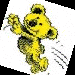
|
You can get more detail about the above DIY example in the sub-section on
DIY Affine Distortion Mapping.
As you can see we no longer have 'holes' in our image as a color is looked up
for each and every pixel in the destination. It still does not look very
good, but that is a matter of adjusting exactly what color should be placed
into each pixel.
That is Reverse Pixel Mapping does not generate either holes, or overlapping
pixels. Each pixel has a properly defined color producing a complete
image.
The distinction between forward and reverse mapping is important as most
mathematical transformations are defined as forward mappings, mapping a single
source (X,Y) position to a destination (I,J) position. And indeed a 'forward
mapping' works well for vector graphics, and drawing lines where you can just
map the ends of the line and draw it. This is especially true for any linear
transformation, such as rotations, where lines remain straight. It is in fact
what is done for all vector based languages such as such as postscript and
SVG.
But for a general raster image, you must use a 'reverse mapping' to distort
the image, so that you can be certain that you 'fill in' all the pixels of the
destination image.
For example if you look the mathematics that was used to map the coordinates
in the above two cases, you will find they look almost exactly the same. The
reverse mapping of a 'rotate' is another 'rotate', just in the opposite
direction. If you look closely you will see that the 'sin' constant is
negated to the forward mapped version, and that is enough to reverse the
direction of rotation. This detail is important and critical.
The problem is not all forward mapping transforms, work well as a reversed
transform. Some forward mappings in fact have no simple direct reverse
mappings. This is not to say it can't be done, just not simply.
On the other hand some image transformations work very well as a reverse
mapping, but do not have simple forward mappings. So using reverse mapping
method is both good and bad in mathematical terms.
As an FYI here is the faster equivalent to the above using a
General Distortion, SRT method that does the exact same rotation of the
image as was done above, and producing the exact same result, just faster.
Again the color lookup is restricted to just the color of the closest pixel to
the mapped position by using 'point' interpolation. This means that no new
colors are added to the image (other than when we 'missed' the source image),
but you also get severe aliasing effects.
convert koala.gif -virtual-pixel Black -interpolate NearestNeighbor \
-filter point -distort SRT 17 koala_rotated_srt.gif
| |
![[IM Output]](koala_rotated_srt.gif)
|
  |
For an alternative discussion of distortion transforms, see Leptonica, Affine Implementation and specifically its discussion of
'point-wise' method. The other method, 'sequential', is essentially how IM
used to implement its Rotate and Shear distortion operators.
|
What's in a name?
During my study I found that there is no real clear naming of this image
processing method. The actual algorithmic process is known a '
Reverse
Pixel Mapping', while the use of mathematical equations is known as a
'
Geometric Transformation'. If the distortion is controlled by the
movement of various control points, it often known a '
Image Warping' or
'
Rubber Sheeting'. The process of defining specific points, usually to
find equivalent points between two or more images is known as '
Image
Registration'.
Images can also be subdivided into smaller simpler units which are
individually distorted using a technique called '
Gridding'
(quadrilaterals) and '
Triangular Meshing' (triangles). By using small
incremental distortions with blending of colors from two images you can
generate animated '
Image Morphs' such as you see in movies and music
videos.
If a pre-prepared mapping image is used rather than a, on the fly,
mathematical lookup, you get '
Absolute Distortion Mapping' if the
lookup is a relative displacement (50% gray being no displacement or change of
the lookup coordinate) you get '
Displacement Mapping'. If the mapping
just slightly modifies color (shading) rather than lookup distortions, you get
the related but different '
Bump Surface Mapping'.
In the 3d modeling, and in 3d computer games, the same techniques are also
used to give some type of colored pattern to flat and curved surfaces in
a method known as '
Texture Mapping'. This can involve sub-dividing
images into grids and meshes that approach a single pixel. Then you have
viewing of an object that is defined in terms of millions of single points
using a technique called '
Point Splatting', though that is typically
applied using a forward mapping distortion.
All the above are very closely related, and most basically involve the look up
of a pixels color based on mapping a final destination coordinate, to the
source image (or object). In other words mapping
Destination to
Source. What term should be used... Take your pick.
Pixel Color Lookup
There are still a few problems with the above
Reverse
Pixel Mapping technique. First of all is that when mapping a pixel from a
fixed integer position in the destination, you can end up with a non-integer
position in the source image. That is a location that falls somewhere between
the individual pixels on the source image. To determine what color should be
returned a process called
Interpolation
is used to determine the final color for that real position by mixing the
colors of the surrounding pixels.
The
Interpolation setting will also
handle the case when a part of a distorted image becomes 'stretched out' so
that a single source pixel becomes smeared over a large area of the
destination image. However the opposite is not handled very well by a simple
interpolation method. And that requires other techniques which we will look at
below.
For example here we again rotate our koala, but this time use a "
-interpolate Mesh" setting to mix the four nearby pixels
so as to produce a better, more correct, color from the lookup.
convert koala.gif -virtual-pixel Black -interpolate Mesh \
-filter point -distort SRT 17 koala_rotated_mesh.gif
| |
|
As you can see by using a simple merger of just the closest neighboring colors
surrounding the non-integer lookup point, you can greatly improve the look of
the distorted image.
But there are other problems involved...
For example what do you do when the mapped position 'misses' the source image
completely. In this case, what color should be returned is determined by the
Virtual Pixel setting. This setting
will pick a color, such as the nearest edge of the source image, pretend the
source image is infinitely tiled (or mirror tiled) across the plain, or use
some specific color such as 'white', 'black', or 'transparent' or the user
defined background color.
There is also the possibility that there is no mathematically valid coordinate
for a specific destination position being mapped. For example the pixel looks
into the 'sky' of a perspective 'plane' (See
Viewing
Distant Horizons), and thus does not even see the 'plane' in which the
source image lies.
In this case a
Virtual Pixel is useless
as it does 'hit' the source image plane in a N-dimensional space, and as such
the destination pixel is completely invalid! In this case IM uses the current
"
-matte" setting for the
pixel color. If it is a 'near-miss' IM will anti-alias this invalid color
with a neighbouring colors of the image plane, if it knows how. It does for
perspective distortions.
Super Sampling
Interpolation works well for simple image distortions. But if part of the
source image gets compressed into a much smaller area, each destination pixel
could actually require a merging of a much larger area of the source image.
Remember pixels are not really points, but represent a rectangular area of
a real image.
This means in some cases we really should be trying to compress a large area
of the source image into a single destination pixel. When this happens
a simple
Pixel Lookup will fail, as it only looks up
the color at a single 'point' in the source image (using the surrounding pixel
neighbourhood), and does not merge and combine all the colors of the input
image that may have to be compressed into that single pixel.
The result of this is that a destination pixel could end up with an
essentially random color from the source image, rather than an average of all
the colors involved. This is not in itself bad, but when all the pixels in
an area doe this you get images with seemingly random, isolated pixels, Moire
effects, and aliased 'stair-casing' effects. Thin lines also start to look
more like dotted and dashed lines (see examples for the
Sample Operator), or could disappear entirely.
All these effects are known collectively as
Aliasing Artefacts.
One solution to this to more color lookups from the source image, for each and
every pixel in the destination, so as to try and determine a more correct
color for each pixel in the destination image. The simplest solution is
generally known as
super-sampling, or
over-sampling. See the
Wikipedia Entry on
Super-Sampling.
By taking more samples from the source image, over the area that will map
onto each destination pixel, the final color of that pixel will become a more
accurate representation of distorted image at that point. The more color
samples you make, the more accurate the final color will be, and a smoother
more realistic look will be generated, though the slower the distortion
becomes.
Remember this technique only really improves the general look of the
destination in areas where the source image becomes compressed by more than
50%. In areas where the distortion magnifies the source image, or keeps it
about the same scale, a single
Interpolated
Look Up of the source image look up will generally produce a good result
with just one single lookup.
In the
Imploding Images warping examples
(and many other examples throughout IM Examples), I touched briefly on the
simplest method of 'super-sampling'. Basically enlarging the size of the
output image (or in this case simply by enlarging the input image), and then
performing the distortion. After the distortion is complete we then resize
the image back to its normal size again, which merges all the extra 'samples'
that was generated.
For example...
convert -size 94x94 xc:red -bordercolor white -border 3 \
-virtual-pixel tile -implode 4 \
implode_tiled_box.gif
convert -size 94x94 xc:red -bordercolor white -border 3 \
-virtual-pixel tile -resize 400% -implode 4 -resize 25% \
implode_tiled_ss.gif
|
![[IM Output]](implode_tiled_box.gif)
Normal Implosion of a Box Image |
![[IM Output]](implode_tiled_ss.gif)
Super Sampled Implosion |
Of course rather than enlarging the input image, you could start with a higher
quality (larger) source image, or generate one during some previous processing
step. If one is available.
This is especially useful when rotating text, which often has very fine detail
that needs to be uniformly preserved to ensure a good high quality look in the
final image. For examples of this see the
Polaroid Transform.
This is only one method of
super sampling (known as the 'grid' method),
there are however many other variations on this method. Eventually these
methods may be implemented more directly in ImageMagick, but for now simple
enlargement and scaling of images work quite well, without any additional
coding need.
One final word of warning. Super-sampling is limited by the number of samples
that was used for each pixel in the final image, and thus the amount of
scaling used in the final resize. This determines the final 'quality' of the
distorted image. But by using larger scaling factors, the distorted image will
of course be much much slower to generate. But have even higher quality, has
its limits.
In the extreme, super-sampling will not handle any image distortion that
involves infinities (such as in the center of an imploded image). In such
cases a completely different technique is needed, such as one that is provided
by
Area Resampling (see below).
In summary, super-sampling can improve the look of images with only minor
distortions, such as rotations, shears, affine, and simple perspective. But it
has limits to the types of distortions that it can improve.
Adaptive Super-Sampling
The super-sampling technique can be expanded further. Rather than just using
a fixed number of color lookups for each pixel, a check is made on either the
distance between the lookups in the source image, or on how close the colors
returned from a low level sampling, to see it should make more samples for
that specific pixel.
That is the amount of super-sampling could be made responsive to needs of the
distortion, without knowing anything about the specifics of the distortion
itself. This is known as
Adaptive Super-Sampling.
This technique is actually very common in Ray Tracers, where it is next to
impossible to determine just how complex the resulting image is at any
specific point. In this case it is often restricted to the use of 'color
differences' around the specific location, to determine when more samples are
needed. if a pixel is very different to its neighbours, then more samples are
used in that area to refine what is probably the edge of some 3 dimentional
object.
IM does not currently support adaptive super-sampling at this time. Though it
is quite possible to add alternative sampling methods into the
General Distortion Operator (see below). It will require
some functional rearrangement of the code, so may not be added anytime soon.
Super-Sampling Summary
The difficulty with super-sampling is in determining just how many 'point
samples' is needed, and how those samples should be arranged with the
sub-pixel bounds. Also what sort of 'weighting' should be applied. See the
Wikipedia Entry on
Super-Sampling.
Area Resampling, for better Distortions
One of the best alternatives to super-sampling methods is
Area
Re-sampling.
Rather than distorting a larger image and averaging the results by resizing,
which is just taking and averaging more samples from the image, we actually
determine exactly how many pixels from the source image should be merged
together (based on the 'scale' of the distortion at that point) to generate
each specific output pixel. That is figure out a rough 'area' within the
source image, each output pixel represents, and merge (filter) all the pixels
in that area according to a resampling filter.
In fact this is exactly what the ImageMagick
Resize
Operator (in reality a very specific type of image distortion) does to
generate such good results. However for resize, you only need to calculate the
scale of the area needing to be sampled for each pixel, once for the whole
image. The area it needs to 'sample' is fixed size rectange (window) in the
source image, making the re-sampling process easy, and providing a short-cut
in the distortion process.
When area re-sampling a distorted image, the area of pixel (window) to get
samples from will not only change position, but also will change size. As
such one pixel in the destination may only need to merge a few source image
colors, or even just one single interpolated color lookup (such as in
enlargments). While another pixel elsewhere in the destination image, may need
to sample a very very large number of pixels to generate the correct final
color. Close to infinities it may even have to incluce all the pixels in the
source image as part of the the sampling process.
Also the area that a destination pixel represents in the source image, may not
be a simple square, circle, or even ellipse but may actually be a highly
distorted shape, according to the distortion being used. Calculating and
handling such awkward shapes can be very time consuming, or near impossible to
achieve.
![[Diagram]](../img_diagrams/ewa_mapping.gif)
Using an elliptical area of the source image to calculate colors for each
destination pixel, is a method known as Elliptical Weighted Average (EWA)
Re-sampling, and was outlined in the PDF research paper "
Fundamentals of Texture
Mapping and Image Warping" by
Paul Heckbert (who also wrote the
'zoom' program from which practically all image resize algorithms are derived).
This was then used to define the new
Generalized
Distortion Operator (see below).
An ellipse is the perfect shape for either
Affine
Distortions or
Perspective Distortions. It
is especially good for extreme scale reductions (see example below). And
while not perfect for other distortions, it is generally a reasonable fit for
many other distortions, such as
Arc and Polar Distortions
(but not their reverse), as well a radial distortions like the
Barrel Distortion.
But it is a poor fit for non-linear distortion mappings such as
De-Polar and
Shepards Distortion,
as such it is not used for these distortions.
Super Sample does not have this shape problem as each 'sample' is reverse
mapped onto the destination. So it becomes the better sampling method in such
cases. But as mentioned it may not sample all the pixels needed, or even
sample too many pixels.
Area Sampling vs Super Sampling
Here are all three sampling methods IM currently provides, when applied to
an extreme infinitely tiled perspective image. See
Viewing
Distant Horizons below for details, of this distortion.
# input image: special checkerboard with a gold outline.
convert -size 90x90 pattern:checkerboard -normalize -fill none \
-stroke gold -strokewidth 3 -draw 'rectangle 0,0 89,89' \
-fill red -draw 'color 20,20 floodfill' \
-fill lime -draw 'color 40,70 floodfill' \
-fill dodgerblue -draw 'color 70,40 floodfill' \
checks.png
# Using Interpolated Lookup
convert checks.png -filter point \
-virtual-pixel tile -mattecolor DodgerBlue \
-distort Perspective '0,0 20,60 90,0 70,63 0,90 5,83 90,90 85,88' \
horizon_tile_point.png
# Using Grid Super Sampling
convert checks.png -filter point -set option:distort:scale 10 \
-virtual-pixel tile -mattecolor DodgerBlue \
-distort Perspective '0,0 20,60 90,0 70,63 0,90 5,83 90,90 85,88' \
-scale 10% horizon_tile_super.png
# Using Area Resampling (default)
convert checks.png -virtual-pixel tile -mattecolor DodgerBlue \
-distort Perspective '0,0 20,60 90,0 70,63 0,90 5,83 90,90 85,88' \
horizon_tile.png
|
![[IM Output]](checks.png)
Check Image
|

|
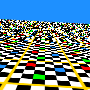
InterpolatedLookup |
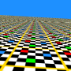
Super Sampling
x10 |
Elliptical Weighted Area
(EWA) Resampling |
All the images are exactly the same distortion, just using different
're-sampling' techniques.
The last image in the above used the default EWA settings of the
Generalized Distortion Operator, and as you can see it
produced an extremely high quality result. However it took 4.6 seconds to
generate this image, Which is not too bad if a little slow (due to the unusual
extremes involved).
The first image has the default EWA resampling turned off by using a "
-filter point" setting. This
forces it to use
Direct Interpolated Lookup for each
pixel. As such this image was generated extremely fast in comparison (.51
seconds), but as you can see produces a horible result as 'minification'
(downsampling) increases with 'distance'.
The middle image is as the first image but with the distorted output image
being enlarged by a factor of 10, before being scaled back (grid resampling)
to match the other images. That is more than 100 pixels were looked up and
averaged together for each destination pixel, so as to
Super Sample the result. It is quite fast to generate (1.2 seconds), and
while it improves the quality of the image in general, that improvement is
limited. The ×10 used in the above example is very heavy, far exceeding
the more typical 3 or 4 times scaling used for most super-sampling usage.
The biggest difference between the results is that super-sampling only does
a general improvement in quality uniformly over the whole image. As the
distortion gets more sever it starts to break down. The result is the highly
visible
Resampling Artifacts in the middle
ground, and more specifically a line of server moire effects just before the
horizon. The moire effect is caused when when the 10 samples across per pixel
nearly matches the checker board pattern of the image, producing distorted
color effects.
On the other hand area-resampling concentrates more on the problem pixels
closer to the horizon (where it spends almost all of its time), than on
foreground pixels, where it does actually out perform super-sampling.
Basically the above is a very extreme distortion, and the time EWA lookup
takes is commensurate. More commonly it generates much better results than
a single interpolated lookup, as it efficentally looks are every pixel
involved, while not using too many samples is areas that don't need it, as
super-sampling does.
In Summary...
Using a simple ellipse (EWA resampling) or a rectangle (Resize), to do 'area
resampling' does produce good results, as all the source pixels involved in
scaled, affine or perspective distortions, will be merged to produce the final
color of an individual destination pixel.
In cases of very non-linear distortions, such as in
DePolar Distorts, or indeterminanate distortions, such as
Shepard's Distortion or even ray-tracing, finding the
correct 'Area' to resample all the source pixels needed, becomes
prohibitive, and super-sampling is the best method to improve results.
But for straight tiling, enlargements, and unscaled rotations, a very fast
single 'point' interpolated lookup is probably all that is required, and may
even be recommended to ensure perfect no-op (no change) distortions (see
below).
Remember however all resampling techniques are just methods for determining
the color of each individual pixel. It is not actually part of the how an
image is distorted, except with regard to the mapping of locations between
destination and source (or visa-versa if posible).
Generalized Distortion Operator
With the generation of these examples, the ensuing discussions in the
IM Forums, and multiple requests from users for
easier and faster ways to do perspective and other distortions, a new operator
was added to IM v6.3.5-1 to allow us to more easily add image distortions, of
many different types.
This
Generalized Distortion Operator is called "
-distort", and you can see what
distortion methods it has available on your IM version using "
-list Distort".
The "
-distort" operator
takes two arguments, one of the distortion
methods as given by the
above, and a second string argument consisting of comma or space separated
list of floating point values, that is used to control the specific distortion
method.
convert ... -distort {method} "{list_of_floating_point_values}" ...
|
The number floating point values given is however highly dependant on the
distortion method being used, and their meanings also depend not only on the
method chosen, but can also depend on the exact number of control
points or attributes needed for a particular method.
This is especially the case for the '
Scale-Rotate-Translate' (or '
SRT'
for short) distortion, which really combines three separate '
Affine' distortions into a single distortion.
Many distortion
methods take a list of control points (in
Image Coordinates), and typically these are
given as
pairs of coordinates which control how the distortion is to
modify the image. These pairs of coordinates are detailed more fully later in
Distortions Using Control Points.
Distortion Options, Controls and Settings
Best Fit +Distort Flag
By default "
-distort"
will usually distort the source image(s) into an image that is the same size
as the original image. There are exceptions to this, such as the '
Arc' distortion (a polar mapping variant) where the
input source image size really does not have much meaning in the distorted
form of the image (see
Arc Distortion below for details).
The other form of the operator, "
+distort" (Added to IM v6.3.5-7), will attempt resize the
distorted image so it will contain the whole of the input image (if possible),
much like what the older
Rotate and Shearing
operators do.
However this particular 'mode' of operation also goes further and also sets
the
Virtual Canvas Offset (page) of the
resulting image. This way you can later
Layers
Merge this image onto another image, at the correct position according to
your control points, using the appropriate
Alpha
Composition (see
3d Cubes, using Affine Layering as
a basic example.
Also (depending on the distortion method) a "
+distort" will attempt to take
into account any existing
Virtual Canvas Offset
that may be present in the source image, and use it as part of the distortion
process. See the notes about the individual disortion methods.
As such you may need to make judicious use of the "
+repage" attribute setting
operator to clear or adjust that offset
before using the 'best-fit'
"
+distort" form of the
General Distortion Operator. You also may need to use it
after if the
virtual canvas and offset is not required. See also
Removing Canvas/Page Geometry.
The normal "
-distort"
will just ignore any existing offset present in the source image in terms of
the distortion itself, but will copy that offset unchanged to the distorted
image.
In Summary... Use "
-distort" to have results mapped into an image of the same size.
And use "
+distort" to
try and automatically set the output image size, BUT also use and generate
Virtual Canvas Offsets (page attributes).
Also see
Distort Viewport (below) if you want
to override this general viewport selection, and exactly control of what size
and what part of the distorted image you want to see in your results.
Note... The best-fit viewport generated by "
+distort" is 2 pixels larger
than what users would typically expect. The reason is that these pixels
contain semi-transparent pixels that result from the area resampling filter,
and these pixels are vital to correct 'edge joining' and overlaying of the
distorted image.
Technically the number of pixels added should depend on the output scaling of
Resampling Filter Support. That is how much
a pixel's area could 'spread' due to the resampling filter. However as the
scaling of each pixel can be variable, calculation of the absolutely correct
number of additional pixels needed is a very tricky matter, and usually not
worth the effort.
The 2 pixel added is thus a 'fudge', as distortions rarely enlarge images
which causes pixels to 'spread' more. Also as most standard resampling
filters has a support of 2 units, the addition of 2 pixels a reasonable one.
Also as this addition is 'fixed' it allows users the option to simply
Crop Image Size (in various ways), if that is their
wish.
The 2 pixel 'fudge' does become obviously too small when doing enlargments of
images. But those are fairly rare distortions, and users can define there own
Viewport (see below) if this is a problem.
The virtual offset of the distorted image on the virtual canvas, is adjusted
to account for these 2 extra pixels, so the distorted image is correct for
overlaying, though not for simple composition. But be warned that while
Crop,
Trim will
preserve the layered image location,
Shave, and
Chop, will shift the layer image, relative to
this offset.
Distort Pixel Color Determination
As discussed above in
Reversed Pixel Mapping above,
each point in the resulting image is determined by first mapping that pixels
location in the destination image, to the equivalent (reverse distorted)
location in the source image, according to the distortion method chosen.
However the final color of the pixel is not so simple to determine, as it is
effected by a large number of factors.
Virtual Pixels and Tiling
The distortion mapped point may not hit the actual source image, but somewhere
beside it, or even a lot way from the actual image. The solution to this is
to pretend the source image surrounded by an 'infinite' or 'virtual' surface,
which is defined by the current "
-virtual-pixel" setting.
For details and examples of the effect of this setting see
Virtual Pixel examples.
This can be very useful for generating distorted, or even undistorted tile
patterns of the source image. Techniques for this are shown in the
Virtual Pixel section itself (undistorted)
and in
Affine Tiling and
View Distant Horizons below.
Invalid Distortion Pixels
Sometimes the distortion of a destination pixel does not even 'hit' the
vitrual tiled image! This generally happens when you distort the image using
some type of 3-dimensional space distortion method and the pixel 'vector' does
not even hit the source plane in which the image lies. Basically the the
result of the distortion becomes 'undefined' mathematically. In that case the
color will be determined from the "
-mattecolor" setting.
For example when you see 'sky' in a
Perspective
Distortion (for example see
View Distant
Horizons), the mathematics for determining the source image location
became 'undefined' (actually it is defined, but it is not valid from an users
forward viewing perspective). As such the "
-mattecolor" is output for
the 'sky'.
Actually the perspective distortion algorithm also manages to include some
'anti-aliasing' information for pixels close to the horizon, though that is
uncommon for such situations.
EWA Resampling and Filters
Once you know where a destination pixel 'hits' the source image, you need
to determine the color to make the destination pixel, using the pixels near
the 'hit' point in the source image.
Normally the
Distort Operator will use the
Area Resampling method EWA (Elliptical Weighted
Average) to average out a larger area of the source image to work out the
right color of for this pixel.
You can change the filter using by EWA resampling using the "
-filter" setting. See
Resampling Filters, and more specifically
Cylindrical Filters for more details.
Originally a
Cylindrical Gaussian
filter was used for EWA resampling, as this was what was defined in the
original research paper for EWA resampling. But this tends to produce very
blurry result, though it also does not produce aliasing effects. This used to
be the default filter, along with an implementation bug that caused extreme
blurriness before that version (now fixed)
From IM v6.6.5-0 after major discussions with Nicolas Robidoux, Professor of
Mathematics at Laurentian University, the default filter for image distortions
was replaced with the '
Robidoux' filter, which is a very
'Mitchell-like' cubic filter, designed specifically for EWA resampling. See
Cylindrical Filters, for
information on this and other cylindrical filters.
Note however that any underlying Windowed Sinc filter function is replaced by
the more circular Windowed Jinc filter function. As such selecting
a 'Lanczos' filter will return a "Jinc windowed Jinc" filter, rather than
a "Sinc windowed Sinc" filter. See
Windowed Jinc
Cylindrical Filters for more details.
ASIDE: '
Sinc' functions are NOT really usable as a cylindrical
function, as the function interaction with radial disances on a grid, causes
the filter weights into form that tends to cancel itself out (zero weight sum)
whenever an even number of 'lobes' are used. This in turn causes it to try and
generate near infinite colors when used with a pixel-level checkerboard 'hash'
pattern.
Basically EWA uses resampling filters, much like the
Resize Operator, and as such you can also modify
the filters using the special
Expert
Filter Options. The blurriness of the a '
Gaussian' and
Gaussian-like filters for example can be controlled by the
Filter Blur Setting. Similarly you can
use the
Lobes Support Setting, to
control the size and power of the Windowed Jinc Filters, such as
a '
Lanczos' filter.
 |
There are number of extreme distortion methods, which automatically turn off
EWA re-sampling, and only use the more direct Interpolated Lookup.
For example the Depolar distortion, produces
resampling areas in the shape of circular arcs that do not fit 'elliptical'
(EWA) resampling very well. Other distortions such as Shepards make the calculation of 'scaling factors' extremely difficult,
though a future improvement of the distort operator could make it possible).
A Super Sampling technique is recommended for
these distortion methods to prevent generating severe Aliasing Artefacts in areas of image
compression (down sampling) in the results.
|
Resampling Failure
In some special situations the EWA resampling Ellipse may fail to actually
'hit' any real pixel for it to create a weighted average. Basically the
ellipse is so small, or so thin, that it falls completely between every pixel
in the image. And without any pixel colors, it can not generate a color for
the output image at that point.
This is an extreme situation, and generally is imposible to achieve unless you
are playing with
Expert Filter Settings.
But in the unlikely event that no pixels are hit, or the filter weights add up
to zero, the resampling will fail. In that case IM will fall back to using
a simple direct interpolated lookup, just like you would get if you turn of
EWA filtering (see next).
If you want to check if this is happening you can use the special
Background Interpolation with
an unusual background color (like 'red') so as to highlight any such resampling
failures.
For example, here I purposfully set the support of a box filter too small,
and thus making the resampling ellipse so small. I also greatly enlarge the
image so you can see what parts 'hit a pixel' and which didn't.
convert \( xc:red xc:white xc:black +append \) \
\( xc:blue xc:lime xc:white +append \) \
\( xc:black xc:red xc:blue +append \) -append \
-filter Box -define filter:support=0.4 \
+distort SRT 30,0 bad_box_distort.png
| |
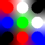
|
In the greatly enlarged image, the resampling circle will either hit only one
pixel (producing an aliased cicle of solid color. Or it will fail to match any
pixel as the circular sampling area falls completely between the pixels, and
thus the filter will fall back to an interpolated gradient of color (
Bilinear Interpolation by default), to get at
least some reasonably valid color for the resulting image.
Here is the same example, but replacing the interpolation method with the
special (and normally useless)
Background
Interpolation (just return the background color, which was set to 'gray').
convert \( xc:red xc:white xc:black +append \) \
\( xc:blue xc:lime xc:white +append \) \
\( xc:black xc:red xc:blue +append \) -append \
-filter Box -define filter:support=0.4 \
-interpolate background -background Gray \
+distort SRT 30,0 bad_box_distort_gray.png
| |
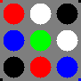
|
For complete coverage (so it always finds at least one pixel) a cylindrical
resampling filter needs a 'support' of at least about 0.707 (sqrt(2)/2)
(default for a box filter). All filters are typically much larger than this
minimal support size. For examples of this see the section on
Cylindrical Filters.
| The small colored dots in the corners is
caused by a resampling optimization for virtual pixels (aborting an
expensive EWA resampling when sampling VP areas of solid color). They
will disappear or change with a different selection of the "-virtual-pixel"
setting.
Normally this is not a problem, and only seen here because distort uses
a 'Best Fit Viewport' that is slightly
larger than the original image, and thus includes a few extra pixels
around the edge which in this case samples vitural pixel.
|
Interpolated, or Direct Color Lookup
You can use "-filter
point", to turn off filtering, and hence EWA resampling.
When this is done Imagemagick will switch color lookups to use fast and
simplier
Pixel Interpolation. That is it
will look up a color using only a 'single point' referance to the source image
without any 'resampling area'. The color of the resulting pixels will use
an interpolated color based only on nearest neighbours to point.
Interpolation will generally cause sever aliasing effects
when any form of minification or down-sampling of the image occurs.
But it does work extremely well for images containing minimal distortions such
as rotations, tiling, or for
image enlargement (magnification or
up-sampling).
A
Super Sampling technique can be combined with
interpolation, to improve the results in areas of strong compression,
minification or down-sampling. See
Depolar-Polar
Cycle Problems (a distort that can not use EWA resampling) for an example
of using super-sampling to resolve interpolated aliasing.
Verbose Distortion Summery
By setting "
-verbose"
before running "
-distort" (use "
+verbose" to turn off again), distort will output to the standard
error channel, information on the algorithm and internal coefficients it
calculates, and uses when distorting the given image, in the way specified.
You can use this information to look at and understand how the distortion
works and is applied. It is also a debugging tool we can use to figure out
what is going wrong, and as part of the implementation process for new
distortions.
convert koala.gif -verbose -distort SRT 0 +verbose koala_noop.gif
|
 |
NOTE: The resulting image is almost but not quite exactly the same as the
input image (see "no-op distortions" next).
|
The verbose output details the two alternative distortion techniques for the
given distortion. One is an '
AffineProjection' distortion, while the other shows a
DIY FX Operator alternative detailing exactly how
it maps a given pixel in the output image (i,j) to an interpolated lookup in
the input image (xx,yy), so as to transform the image. It does the resampling
ellipse calculates which uses complex mathemathics (eigan values) to figure
out, It only calculates the un-scaled interpolated lookup point in source
image from which to determine the color of the (i,j) pixel.
Both give information on the distortion process and can be used to extract
extra information for use in other distortions of the same type. For a more
complex example of using this information see
Perspective Internals and
Bilinear
Internals below.
Also for an example of using an FX command for image distortion see
FX Image Resizing.
The extra '
0.5' additions and subtractions in the above is needed
to convert 'pixel coordinates' into 'image coordinates', and is required for
correct mathematical handling of image distortions. See
Image vs Pixel Coordinates below.
No-Op Distortions
The above example shows the results of doing a no-op distort. That is running
an image through distort (for some secondary effect) but without any actual
distort involved (just a 1 to 1 mapping of pixels).
The EWA resampling filter will not reproduce the exactly the same colors as
the original, but will blur the individual pixels very slightly with its
neighbours. This is due to the 2 dimensional filter being used, and while the
color blurring is minimal it can never be eliminated.
As such to do a true 'no-op' we must also turn off EWA filtering and use
Interpolated, or Direct Color Lookup (see
above).
convert koala.gif -filter point -distort SRT 0 koala_noop_perfect.gif
| |
![[IM Output]](koala_noop_perfect.gif)
|
Almost all the
Interpolative Settings will
generally extract an exact copy of the source pixel when it is exactly
referenced. However as a precaution, you can also specify
Nearest-Neighbor interpolation, for
speed and assurance that only an exact color match is returned, regardless of
any floating-point errors that distort may produce.
convert koala.gif -filter point -interpolate nearest \
-distort SRT 0 koala_noop_perfect_2.gif
| |
![[IM Output]](koala_noop_perfect_2.gif)
|
This may seem counter-productive, but it can be a very useful method of
enlarging an images area, or tiling images (using
Virtual Pixel Methods), without actually resizing the original image
data. See
Tiling using Virtual Pixels via
Distort for examples of this.
That is using the
Distort Operator for its secondary
effects, such as multi-image virtual pixel tiling, image size enlarging or
cropping, adding borders, or even translation (by integer or even sub-pixel
amounts). None of which actually requires the image to be 'distorted' just
'modified' in some 'programmed' way.
Viewport, Where Distort Looks
As mentioned above using "
-distort" or "
+distort" changes what the resulting size and location of
the 'destination image' to either be: the same as the source image (ignoring
any virtual canvas settings), or, a best fit calculation for the distorted
source image (if possible), respectively.
These two things basically define what part of the resulting 'distorted space'
that the destination image is seeing. Another way to think of it is that the
destination image is a 'window' looking at the resulting distorted image, or,
a 'viewport' into the distorted space.
The "
distort:viewport" setting overrides both of these defaults,
and allow you directly specify what part of the distorted space you want to
see...
-define distort:viewport=WxH+X+Y
-set option:distort:viewport WxH+X+Y
These were added in IM v6.3.6-1. It does not enlarge or scale the distorted
image, just specify the location and area being viewed (the viewport) in the
distorted image space.
This can be used to create a destination image of a specific size, or shift
the view to a specific area in the distorted image space. It is very similar
to using '
Viewport Crop', of
an infinitely sized (virtual pixel defined) distorted image.
For example, here we crop the output to just the koala head (with a no-op
distortion). In other words just a direct 'viewport crop' of the original
un-distorted image.
convert koala.gif -define distort:viewport=44x44+15+0 \
-filter point -distort SRT 0 +repage koala_viewport.gif
| |
![[IM Output]](koala_viewport.gif)
|
And here we expand the view, to look at the extra space surrounding the
distorted image, and showing the effects the Virtual Pixel setting has on the infinite space surrounding the
original source image.
convert koala.gif -define distort:viewport=125x125-25-25 \
-filter point -distort SRT 0 +repage koala_viewport_2.gif
| |
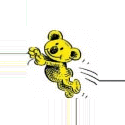
|
In this case it is more like using the
Extent
Operator to enlarge the image. However instead of simply filling with the
background color, distort fills the added area with the
Virtual Pixel Setting. In this case using the
default '
Edge' virtual pixel
setting, which results in the horizontal and vertical lines of pixels,
replicated from the pixels along the edge of the original image.
You may like to make a better choice for the Virtual Pixel Setting. For example using a 'Background' setting will make this
no-op distort work pretty much exactly like the Extent Operator.
For this image 'White' Virtual
Pixel setting would probably be a better choice.
convert koala.gif -define distort:viewport=125x125-25-25 \
-virtual-pixel White -distort SRT 0 +repage koala_viewport_3.gif
| |
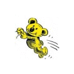
|
The final "
+repage" in
the previous examples is needed to remove the viewport's virtual canvas offset
that "
-distort" will
leave in place when the viewport setting is used. This information is just not
wanted in this case. In other cases, such as when layering distorted images,
you would want that offset information.
The viewport option is particularly useful with a 'Tile' or even a 'Mirror' virtual pixel setting, allowing you
generate tiled, image of any size and in different styles. You can even use
distort to distort those tiled images, such as exampled in Affine Tiling below.
convert koala.gif -define distort:viewport=125x125-25-25 \
-virtual-pixel Mirror -distort SRT 0 +repage koala_viewport_4.gif
| |
![[IM Output]](koala_viewport_4.gif)
|
Centered Square Crop
If you use the "
-set"
option to set the 'viewport' of the resulting image, you can include
Percent Escapes in the assigned value. More
specifically you can include
FX Percent
Escapes that can do mathematical calculations.
This means the 'viewport' can be calculated, while making use of the
attributes of say the size of the current image in memory, to specify the
final size of the resulting image.
What does that mean? Well it means the 'viewport' can be used to generate
special types of
Crop that normally requires one
or more pre-reads, of an image, (or a more advanced API programming
interface), and external calculations to achieve.
For example you can crop out a 'center square' of an image without needing to
know the original images size or orientation, before hand. This is complex,
so I placed the viewport expression in variables so as to make it easier to
read, code, and debug, though it is really just a constant (fixed) expression.
size='%[fx: w>h ? h : w ]'
offset_x='%[fx: w>h ? (w-h)/2 : 0 ]'
offset_y='%[fx: w>h ? 0 : (h-w)/2 ]'
viewport="${size}x${size}+${offset_x}+${offset_y}"
convert worldmap_sm.jpg -set option:distort:viewport "$viewport" \
-filter point -distort SRT 0 +repage viewport_square.gif
|
![[IM Output]](../img_photos/worldmap_sm.jpg)
![[IM Output]](viewport_square.gif)
The resulting image is the largest centered square that can be extracted from
any input source image, regardless of that images size. The distort itself
does not actually distort the image, only copy the area covered by the
viewport.
Note that ALL four numbers needs to be calculated to produce a "centered
square crop" as all values are dependant on the images orientation. As such
each expression uses a 'image orientation' test of the form
'
w>h ? ... : ...', so the resulting value depends
on the images orientation.
This is an alternative form using "min()" and "max()" functions, instead of
image orientation tests.
convert worldmap_sm.jpg -set option:distort:viewport \
"%[fx:min(w,h)]x%[fx:min(w,h)]+%[fx:max((w-h)/2,0)]+%[fx:max((h-w)/2,0)]" \
-filter point -distort SRT 0 +repage viewport_square_2.gif
| |
![[IM Output]](viewport_square_2.gif)
|
Courtesy of
Fred Weinhaus's Tidbits Page.
A technique using multiple image processing techniques for doing the same
thing is shown in
Thumbnails, Square Padding
and Cropping.
Aspect Ratio Crop
This technique can be expanded so you center crop an image to fit a given
aspect ratio.
Also see Forum Discussion
Crop
to Aspect Ratio.
Other Viewport Examples
Also see
Methods of Rotating Images below for
other examples of using a viewport to control what part of the distorted space
is visible in the results.
Output Scaling, and Super-Sampling
-define distort:scale=N
-set option:distort:scale N
Was added in IM v6.4.2-6, as a general output image scaling factor. This
enlarges the output image by the factor given and thus the "
-distort" will need to generate
N2 more distorted lookup 'samples'. The number is
usually an integer, but can be a floating point enlargement factor.
Note that many distortions also allow you to 'scale' the size of resulting
distorted image, however the resulting image size would be unaffected by that
scaling (unless a 'best-fit' "
+distort" was used). This 'scale' setting however does not change
the contents of resulting image at all, just enlarges or shrinks the resulting
output image.
This can be used for example with an appropriate 'viewport' to produce an image
that you can easily "
-resize" to a specific size, allowing you generate a controlled
'zoom' into the distorted image, without loss of quality.
For example, we 'zoom' in on the head of the koala.
convert koala.gif -set option:distort:scale 2.5 \
-set option:distort:viewport 44x44+15+0 \
-distort SRT 0 +repage koala_zoom.gif
| |
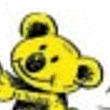
|
Note that while the viewport was requested to be
44x44 pixels,
the actual output image has been scaled to
110x110 pixels.
More commonly, it is used as a simple means of '
Super
Sampling' (see above) the distortion operation. For this an integer
'super-sampling' scale factor is used, and after distorting the image is
scaled back to its original size, to merge the extra samples together, and
produce a higher quality result.
convert koala.gif -filter point -set option:distort:scale 10 \
-distort SRT 0 -scale 10% koala_super.gif
| |
![[IM Output]](koala_super.gif)
|
Also as '
Area Re-Sampling' is not needed when
using '
Super Sampling' for improving image
quality (it only slows it down), it is typically turned off by using a
"
-filter point" option
(see previous section).
Introduction to Distortion Methods
Scale-Rotate-Translate (SRT) Distortion
One of the simplest distortion, but probably one of the most versatile, is the
'
SRT or '
Scale-Rotate-Translate' distortion. (SRT
is just a quick short-hand)
You have already seen the 'no-op' example of this distortion in the above
examples, where the image is processed without any actual distortion being
applied to the image, though it will still be filtered which can induce some
very minor blurring.
Here is a repeat the results of the above 'no-op' distort...
convert koala.gif -distort SRT 0 koala_noop.gif
|
|
Note that the image will be blurred very slightly as consequence of using Area Resampling. However IM resampling filters
have been purposefully designed to minimise this blurring for the No-Op
distortion, and is needed for normal use.
If you want perfect 'no-op' distort for special purposes, then turn off EWA
resampling. That is specify the 'no-op' filter "-filter
Point" to the above before the distort operator.
|
The '
SRT distortion is actually three separate, distortions in
a single distortion method, which is why it is called
a '
Scale-Rotate-Translate' distortion. All arguments, except the
angle rotation, are optional and this makes the arguments highly
variable, depending on exactly how many comma or space separated arguments you
give, up to the maximum of 7 floating point numbers.
-distort SRT " |
Angle |
" |
-> centered rotate |
Scale Angle |
-> centered scale and rotate |
X,Y Angle |
-> rotate about given coordinate |
X,Y Scale Angle |
-> scale and rotate about coordinate |
X,Y ScaleX,ScaleY Angle |
-> ditto |
X,Y Scale Angle NewX,NewY |
-> scale, rotate and translate coord |
X,Y ScaleX,ScaleY Angle NewX,NewY |
-> ditto |
What this does is take an image in which you have selected, and an optional
control point. If no control point is given, the exact center of the input
source image is used. Around that point the distortion will, in sequence...
Scale the image,
Rotate it, then
Translate or move the
selected control point to a new position. Hence the name of this distortion.
The argument order shown above reflects the order of operations that are
actually applied to the image.
X,Y to translate the 'center' of the
transformations to the origin,
ScaleX,ScaleY the image,
Angle
rotate the image, then
NewX,NewY translate the 'center' to these
coordinates. That is the operator really represents 4 internal distortion
operations all applied simultaneously as a single distortion. Though to us
humans only 3 distinct distortions are involved.
So lets take a simple example using the 'koala' image...
One argument is just a simple rotation about the images center, basically
producing a similar result to the older
Rotate
Operator, but without any image size increase.
convert koala.gif -background skyblue -virtual-pixel background \
-distort ScaleRotateTranslate -110 koala_srt_rotate.png
| |
![[IM Output]](koala_srt_rotate.png)
|
Note that by default the size of the input image us also used for the output
image, as such the rotated image may be clipped. It is also perfectly
centered regardless of if the image has an odd or even number of pixels.
Using the 'plus' form of "
+distort", and a clean up of resulting virtual canvas
offsets, we can generate something very similar to the normal
Rotate Operator.
convert koala.gif -background skyblue -virtual-pixel background \
+distort ScaleRotateTranslate -110 +repage koala_srt_rotate2.png
| |
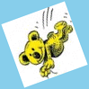
|
  |
As of IM 6.7.3-4 the Rotate Operator is
now using Distort SRT Distortion. Before this it was using Shear Operations, whcih did not produce
a good a result.
|
Lets shrink it by 30% as well, but use a transparent background.
convert koala.gif -matte -virtual-pixel transparent \
+distort ScaleRotateTranslate '.7,-110' +repage koala_srt_scale.png
| |
![[IM Output]](koala_srt_scale.png)
|
The next set of arguments will specify the 'center' around which the image is
rotated and scaled. This point is called a 'control point' or 'handle' in the
image which is a location used to control the distortion. As we are using a
specific point for this distortion, lets not use the 'best-fit' mode to avoid
the complications of 'virtual offsets'.
For example lets rotate and scale the koala around its 'nose', which is
located at
28,24 in the source image. While we are at it lets
distort the X and Y scales different.
convert koala.gif -background skyblue -virtual-pixel background \
-distort ScaleRotateTranslate '28,24 .4,.8 -110' \
koala_srt_center.png
| |
![[IM Output]](koala_srt_center.png)
|
And as a final example, lets also move the 'nose' to near the bottom of the
image, and set background to a matching white background.
convert koala.gif -virtual-pixel white \
-distort ScaleRotateTranslate '28,24 .4,.8 -110 37.5,60' \
koala_srt_trans.png
| |
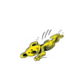
|
Note that the final position is also a floating point value. In fact all the
arguments can be floating point values and the distortion will do the right
thing.
Remember each of the operations, Scale, Rotate, and Translate are performed in
that order.
As you can see this distortion is very versatile, and while you can think of
it as distorting the image using three different methods in sequence, in
reality it is applying all three distortions simultaneously to produce the
shown result. This makes it faster than doing multiple individual operators,
and generally produces a better final result.
The above also demonstrates the use of different
Virtual Pixel settings to define the color
used for the areas referenced outside the actual source image. To see the
effect of
Interpolation on rotations see
Interpolation of a Rotated Line and
Edge.
This distortion specifically designed to take an image and generate an
animation based on the movements and rotation of that object.
For example here I create a stylized space ship, which I then animate in a
very rough way. The ship sits on its base at
20,75 (for the
initial 'hunker-down' scaling) while the normal 'handle' for movement and
rotations is the ships center which is located at
20,60 in the
original image. These points represent control points by which the object can
then be animated in simple terms.
convert -size 80x80 xc:skyblue -fill yellow -stroke black \
-draw 'path "M 15,75 20,45 25,75 Z M 10,55 30,55" ' \
spaceship.gif
convert spaceship.gif \
\( -clone 0 -distort SRT '20,75 1.0,0.6 0' \) \
\( -clone 0 -distort SRT '20,60 1 0 20,49' \) \
\( -clone 0 -distort SRT '20,60 0.9 20 27,35' \) \
\( -clone 0 -distort SRT '20,60 0.8 45 40,23' \) \
\( -clone 0 -distort SRT '20,60 0.5 70 55,15' \) \
\( -clone 0 -distort SRT '20,60 0.3 75 72,11' \) \
\( -clone 0 -distort SRT '20,60 0.1 80 100,8' \) \
-set delay 50 -loop 0 spaceship_launch.gif
|
![[IM Output]](spaceship.gif) 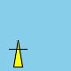
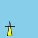
Of course it is a very rough example of how you can use a '
SRT' distortion to animated a static image, but you
should get the idea. You can add more frames, and perhaps some flames and
smoke to improve it further (submissions welcome and best result will be added
here with your name).
Methods of Rotating Images
Images can be rotated in many ways. But just simple rotations may not be what
you are looking for.
Rotate image without changing size...
convert rose: -virtual-pixel black -distort SRT '20' rotate_normal.png
| |
|
Or rotate so as not to clip any of the rotated image...
convert rose: -virtual-pixel black +distort SRT '20' rotate_noclip.png
| |
|
However typically you do not want to see the 'black'
Virtual_Pixel (or whatever other non-image
color) surrounding the image proper.
One solution is to crop the image (using a
Distort Viewport Setting) to the largest rectangle of the same aspect
ratio, such that it only contains real image pixels resulting from the
rotation.
However calculating this rectangle is rather tricky, and was heavily
discussion on the
ImageMagick
Forum using some equations found on the
Math Help Forum.
Here we rotate and do an internal crop at as close to the original aspect ratio
as possible.
angle=20
ratio=`convert rose: -format \
"%[fx:aa=$angle*pi/180; min(w,h)/(w*abs(sin(aa))+h*abs(cos(aa)))]" \
info:`
crop="%[fx:floor(w*$ratio)]x%[fx:floor(h*$ratio)]"
crop="$crop+%[fx:ceil((w-w*$ratio)/2)]+%[fx:ceil((h-h*$ratio)/2)]"
convert rose: -set option:distort:viewport "$crop" \
+distort SRT $angle +repage rotate_internal.png
| |
![[IM Output]](rotate_internal.png)
|
This looks complex but that is because it actually has to calculate
4 separate values to define
Viewport Setting,
Width, Height, and offset in the original image.
Another alternative is to not only rotate, but also scale the image slightly
larger so as to 'fill' the original images bounds.
angle=20
convert rose: -distort SRT \
"%[fx:aa=$angle*pi/180;(w*abs(sin(aa))+h*abs(cos(aa)))/min(w,h)], $angle" \
rotate_correction.png
| |
![[IM Output]](rotate_correction.png)
|
This last is ideal for a
Minor Rotation
Correction of Photos, so as to preserve the images original size.
The only reason this method is simpler, is because only one 'scale' value
needs to be calculated, and as such can be done 'in-line'.
Distortions Using Control Points
While the '
SRT' distortion method is defined
by specifying rotation angles and scaling factors, most distortions are
defined by moving 'points' on the source image, and moving them to a new
position in the resulting image. This is a bit like the movement of the
'center' point when defining a '
SRT'
translation.
These points are called control points, and are more usually defined by giving
4 floating point values (2 pairs of coordinates) for each single control
point. So often a distortion is defined in terms of multiple sets of 4
values. For example....
X1,Y1 I1,J1
X2,Y2 I2,J2
X3,Y3 I3,J3
X4,Y4 I4,J4 . . . .
Where the control point X
i,X
i in the source image
(relative it its virtual canvas), is mapped to I
i,J
i on
the distorted destination image.
|
However as the Distort Operator is actually mapping
destination coordinates to source coordinates (see Reverse Pixel Mapping), the internal use of the above is to map I,J
coordinates to X,Y coordinates. The result however should be the same, just
a different way of thinking.
|
|
Before IM version 6.3.6-0 when the Distort Operator
operator was first introduced, the coordinate ordering for control points
was defined as all the source coordinates, followed by all the destination
coordinates. This however made it very hard to determine which source and
destination coordinates corresponded to each other, and did not allow for
the simple appending of more control points to further refine a distortion.
|
It is defined in this way so that the movement of each individual control
point is kept together in the comma (or space) separated list of floating
point values. It also allows for the future use of external 'control point
files'.
The simplest distortion using control points is the '
Affine' distortion, though this as you will see later is usually
defined in terms of three points, you can use just one or two control point
movements. In actual fact '
SRT' is simply a
two or one point sub-set of a '
Affine'
distortion.
For example here we move the 'nose' of our koala image at '
28,24'
to the new position '
45,40' (as indicated by the red arrow),
which results in a simple 'translation' of the image location.
convert koala.gif -virtual-pixel white \
-distort Affine '28,24 45,40' koala_one_point.png
|
![[IM Output]](koala_arrow.png) 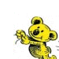
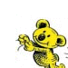
With two points, the '
Affine' distortion
can not only translate an image but scale and rotate it as well (the full range
of a '
SRT' distortion.
For example here I map the 'ears' to the koala (the red line from
'
30,11' and '
48,29'), to a larger horizontal
position (a blue line from '
15,15' to '
60,15'),
requiring the image to be scaled, rotated and translated so the control points
are moved to this new position.
convert koala.gif -virtual-pixel white \
-distort Affine '30,11 15,15 48,29 60,15' koala_two_point.png
|
![[IM Output]](koala_lines.png)
![[IM Output]](koala_two_point.png) Of course a '
Of course a 'SRT' distortion could have
reproduced the above two point 'Affine'
distortion, except that here we defined the distortion in a different way.
Which form you should use is up to you, depending on what you are trying to
achieve.
Image Coordinates vs Pixel Coordinates
The use of control points in the general case is straight forward, but becomes
more difficult when you need to align a distorted image, with another image or
drawn constructions.
The reason is that while most operators in IM handle coordinates in terms of
a 'Pixel Positions' (for example when Cropping, Drawing, etc) distortions deal
with coordinates in mathematical 'Image Coordinates'.
What you need to remember is that pixels in an image are not a 'point' but
actually an 'area', 1 pixel unit in size. That is a pixel located at
10,10 defines a square area of color, going from 10
units down/across to 11 units down and across.
In terms of image coordinates the 'pixel' center is actually located at
10.5,10.5 . That is 0.5 needs to be added when you are
distorting an image to move the center of a 'pixel' to a specific location.
So to re-position the corner 'pixels' of an image you would thus need
to move the image in terms of the pixels located at 0.5,0,5 and
Width-0.5,Height-0.5. On the other hand to
reposition the image in terms of the actual 'edges' of the image you would
simply use the coordinates 0.0,0,0 and
Width,Height .
You just need to think about what you actually wanting to position, the
center of an images 'pixels' or the 'edges' of the image. Or if it actually
even matters for your particular problem.
Remember that if you want to draw other elements
onto your distorted image, you will need to give draw positions in terms of
'Pixel Positions'. And yes the "-draw" operator can draw lines, circles, and other shapes
using floating point values. Similarly the stroke width and/or radii of the
objects can also be given as floating point values.
|
A draw stroke width of less than 1.0 does not work well, (See Drawing Lines). Also the area fill adds an
extra 0.5 (matching the stroke width addition) to the edges of the fill area
(See Draw Fill Bounds). This is done
regardless of the actual strokewidth used.
For more information see Draw Fill Bounds.
Something I regard as a bug.
|
Control Points using Percent Escapes
You can also use Percent Escapes within
the distort arguments.
For example you can extract image attributes for one image, then use them to
resize another image to match the first image. Here I grab the size of the
"rose:" built-in image, then use a 'Affine' distortion to resize the larger "logo:" image
to the same size (without preserving the aspect ratio).
convert rose: -set option:rw %w -set option:rh %h +delete \
logo: -alpha set -virtual-pixel transparent \
+distort Affine '0,0 0,0 %w,0 %[rw],0 0,%h 0,%[rh]' \
+repage logo_sized_as_rose.png
| |
|
Note that distort will generate slightly larger 'layered image' on a virtual
canvas, (including a negative offset) which is why I needed to include
a "+repage" in the above
example. It also will have fuzzy edges too, as distort is generating an exact
or true distortion of the image, and not a sanitised orthogonal Resized Image.
For a more advance examples on using the Distort
Operator to resize images, exactly as the Resize Operator does, see Distort vs
Resize, as well as the Distort Resize Method below.
You can also use percent escapes to calculate distortions based on an images
position within the current image list. Examples of this are given in Animated Distorts.
Control Point Least Squares Fit
If you supply more than 3 control points for 'Affine' distortion, or more than 4 points for 'Perspective' or the 'Bilinear' distortions, ImageMagick will perform an least squares
average over all the given points to find an 'average' representation for
those distortions.
This means if you are trying to match up one image with another image (a
technique known as 'Image Registration'), you can define more than the
minimum number of points needed so that the result will be a more precise
distortion.
Of course if one or more of those points do not 'fit' well with the other
points, then the result will be skewed by the 'odd' point, as IM tries to find
the best fit using all the control points given, including the bad one. Some
check to find and remove 'bad coodinate pairs' may be needed for some
situations.
Control Point from Files
The list of numbers (arguments) to a distortion can also be read from a file
by using a '@filename' syntax, just as you can input text for
things like "-annotate" and "label:" (see Escape Characters in
Text Arguments).
For example you can specify a distortion like this...
convert input.png -distort Perspective '@file_of_coords.txt' output.png
|
The filename can be just a '@-' to mean read the file from
standard input.
The file itself will be read in as a string and treated as the list of
coordinates (arguments) needed by the distortion involved. As numbers can be
either comma or white-space separated, that means the coordinate pairs can be
cleanly ordered as one pair of coordinates per line in the form...
X1 Y1 I1 J1
X2 Y2 I2 J2
X3 Y3 I3 J3
X4 Y4 I4 J4
....
|
That with the Least Squares Fitting makes the
use of image registration very practical.
As the file is just a list of four numbers per line, you can use other text
processing scripting tools such as "cut", "paste",
"column", and more advanced text processing scripting tools such
as "sed", "awk", "perl", etc to
manipulate the coordinates.
The use of coordinate and distortion argument files will become more important
with more advanced distortions, such as 'Shepards' distortion, and the planned future distortions of
'Grid' and "Mesh' where hundreds of coordinate pairs
may be involved.
Affine (Three Point) Distortion Methods
Affine Distortion
Both the 'SRT' distortion, and the one and
two point forms of the 'Affine' distortion shown above are
actually simplifications of a full 3 point form of the 'Affine'
distortion. In fact if you study the "-verbose" output of any 'SRT' distortion (see verbose distort
setting for an example) you will find that internally it really is
a 'AffineProjection' distortion
(see below).
The only distortion effect that the above methods could not handle fully was
'shears' similar to what the Shear Operator
would provide. For that you need to use a three point affine distortion. You
can think of this as being a three point distortion, by imagining the first
coordinate mapping as a 'origin' with the other two coordinate mappings as
vectors from that origin.
For example here I draw some text, and overlay a red and blue 'vector' to
define the three control points relative to that text. Now by moving the
coordinates (as Image Coordinates of those
two lines, we can translate, rotate, scale and shear that text image, to fit
the new location of those lines.
convert -background lightblue -fill Gray -font Candice \
-size 100x100 -gravity center label:Affine\! \
-draw 'fill blue stroke blue path "M 3,60 32,60 M 27,58 27,62 32,60 Z"' \
-draw 'fill red stroke red path "M 3,60 3,30 M 1,35 5,35 3,30 Z"' \
label_axis.png
convert label_axis.png \
-distort Affine ' 3.5,60.5 3.5,60.5
32.5,60.5 32.5,60.5
3.5,30.5 33.5,20.5' label_axis_distort_shear.png
convert label_axis.png \
-distort Affine ' 3.5,60.5 3.5,60.5
32.5,60.5 27.5,85.5
3.5,30.5 27.5,35.5' label_axis_distort_rotate.png
convert label_axis.png \
-distort Affine ' 3.5,60.5 30.5,50.5
32.5,60.5 60.5,80.5
3.5,30.5 30.5,5.5' label_axis_distort_affine.png
|
![[IM Output]](label_axis.png)
![[IM Output]](label_axis_distort_shear.png)
![[IM Output]](label_axis_distort_rotate.png) 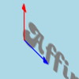
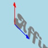
In the first example only the third coordinate (for the vertical red line) was
modified causing the image to be sheared, and stretched along the Y axis. Of
course it does not have to be limited to just the Y axis. Later examples make
more radical changes to the image, including rotations, and translations.
Of course the Annotate Text operator can also
skew actual text in this same way, though only with changes to the angle.
That operator will not scale or enlarge the text in some particular direction.
That is to say it can rotate a 'vector' but it can not stretch it longer or
shorter. See Annotate Argument Usage for
a table of examples.
Affine distortion can do this type of distortion for any image, and not just
drawn text.
Affine using less or more that three coordinate pairs
If only 1 or 2 control point pairs are provided, IM will use a more limited
form of affine distortion to match the movement of those fewer points. For
example with only 1 coordinate pair, it limits itself to unscaled translations
of the image. With 2 points it will limit itself to a 'Scale-Rotate-Translation' distortions (no shears). See the
previous discussion on Distortions Using Control
Points for examples.
If more than 3 control points is given to an 'Affine' distortion, then IM will use Least Squares Fitting to find the best '3 point' affine distortion
matching all the coordinate pairs given. That means the source image
control points may not map exactly to destination image control points, but
a best-fit 'average' of all the points given.
For example if you have a scan of a document, you could locate and map all
4 corners of the document for an affine distortion to correct for rotation and
scaling of the document. In this way you can get a better 'average' fit based
of 4 points rather than 3 points.
Note that while more coordinates can produce a better and more accurate
distortion, if one coordinate pair is very bad, then the least squares fit may
not produce a very good fit at all. Some check to eliminate 'bad coordinate
pairs' may be needed.
Future: Add some code to IM to report how 'accurate' each input
coordinate pair is relative to the others to help determine what 'bad points'
should be eliminated by the user.
Affine Projection Distortion
As I have already mentioned, the various arguments of an 'SRT' distortion and the control points of an 'Affine' distortion, are mathematically transformed
into 6 special numbers which represent the 'coefficients' of an 'Affine
Projection'.
These numbers in an Affine Projection is the coefficients used for the
Forward Mapping of points in the source image
to the destination image. That is they are the mathematical values used to map
a source image x,y to a destination image i,j.
The 6 floating point arguments are (in the order to be given)...
sx, rx,
ry, sy,
tx, ty
These in turn form the distortion expressions..
Xd = |
sx*Xs +
ry*Ys + tx |
, |
Yd = |
rx*Xs +
sy*Ys + ty | |
Where "Xs,Ys" are source image coordinates
and "Xd,Yd" are destination image
coordinates. Internally ImageMagick Distort will reverse the above equations
so as to do the appropriate Pixel Mapping to map
"Xd,Yd" coordinates to lookup the color at
"Xs,Ys" in the source image.
For more information on how the various Affine Projection Matrix values effect
the image see the Affine Matrix Transforms sub-page.
If you already have these coefficients pre-calculated (say extracted from the
Verbose Output of distort, or calculated them
yourself using other methods from other forms of input arguments, then you can
directly supply them to IM to distort the image.
For example, here I 'shear' the image but using an angle to calculate the
coefficients, rather than the movement of control points.
angle=-20
tan=`convert xc: -format "%[fx:tan( $angle *pi/180)]" info:`
convert koala.gif -matte -virtual-pixel Transparent \
+distort AffineProjection "1,$tan,0,1,0,0" +repage \
koala_affine_proj.png
| |
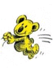
|
The older way of doing this distortion in ImageMagick was to use the "-affine" and "-transform" operational
pair. However as of IM v6.4.2-8 this is just a simple call to
'AffineProjection' using the 'plus' or 'bestfit' form of the Distort Operator. See the Affine
Matrix Transforms sub-page for more details.
Affine Distortion Examples
Affine Tiling
All three of the above affine-like distortion methods we have looked at so
far, also provides interesting ways to generate various tiling patterns, based
on a distorted image.
convert checks.png -matte -virtual-pixel tile \
-distort ScaleRotateTranslate '20,20 .5 30' \
checks_srt_tile.png
convert checks.png -matte -virtual-pixel tile \
-distort Affine '0,0 10,10 0,89 10,50 89,0 50,0' \
checks_affine_tile.png
convert checks.png -matte -virtual-pixel tile \
-distort AffineProjection '0.9,0.3,-0.2,0.7,20,15' \
checks_amatrix_tile.png
|
![[IM Output]](checks_srt_tile.png) 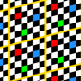
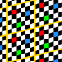
![[IM Output]](checks_amatrix_tile.png)
Using a distortion mapping in this way is actually how 'texture mapping' works
in 3D graphic libraries and games. The only difference is that they map 3
dimensional coordinates of surfaces, back to a two dimensional image.
Even the 'no-op' distortion ("-distort SRT 0"), with an
appropriate Distort Viewport provides a
useful way of tiling whole sequence of images such as Animated Glitter Tiles.
convert glitter_blue.gif -virtual-pixel tile \
-filter point -set option:distort:viewport 100x100 -distort SRT 0 \
glitter_blue_tiled.gif
|
![[IM Output]](../images/glitter_blue.gif) 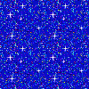
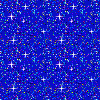
Note that I also used a "-filter point" to turn off EWA
Resampling, so as speed up the operation, as well as ensure a perfect
(unsampled) copy of the source image pixels.
The Distort Viewport can also specify
an offset, so as to 'roll' the tiled images on the resulting image.
3d Cubes, using Affine Layering
The 'Affine' distortion, with its control
points is ideal for generating Orthographic, and Isometric Cubes (see
Wikipedia, Orthographic Projection and Isometric
Projection for definitions), from three images. All that you need to do
is figure out four control points on a destination image.
As we will be using a Image Layering
Technique the points can even have negative values, and allows IM to
adjust the final image size accordingly to the generated warped images.
For this example I'll choose the control points '0,0' for the
center of the cube, and three points equally spaced around that central
point, at '-87,-50', '87,-50', and
'0,100'. All that I then need to to is map the appropriate
corners of three (preferably square) images to these control points.
convert \
\( lena_orig.png -alpha set -virtual-pixel transparent \
+distort Affine '0,512 0,0 0,0 -87,-50 512,512 87,-50' \) \
\( mandrill_orig.png -alpha set -virtual-pixel transparent \
+distort Affine '512,0 0,0 0,0 -87,-50 512,512 0,100' \) \
\( pagoda_sm.jpg -alpha set -virtual-pixel transparent \
+distort Affine ' 0,0 0,0 0,320 0,100 320,0 87,-50' \) \
\
-background none -compose plus -layers merge +repage \
-bordercolor black -compose over -border 5x2 isometric_cube.png
| |
![[IM Output]](isometric_cube.png)
|
Note that I used the Coordinates of the
actual edges of the image when distorting the image This means in mathematical
terms the images should fit exactly together.
Also note that I did not simply 'compose' (using the default Over Alpha Composition) the images together. If
you did that you will get slightly transparent 'gaps' between the images. The
correct way (as shown) is to use Plus Alpha
Composition to join 'edge connected' pieces, which will result in
a perfect join without transparent gaps. For more information see Aligning Two Masked Images.
Afterwards I added an extra border, and removed all transparency. It is not
required, and you could easily use any background (or "none")
but doing so will highlight any 'gap' you may have in your images.
![[IM Output]](isometric_cube_zoom.png) Shown to the right is an enlargement of one such join in the image, showing
the lack of any 'black-filled' gap along the join.
For an alternative method of creating an isometric cube, without using "
Shown to the right is an enlargement of one such join in the image, showing
the lack of any 'black-filled' gap along the join.
For an alternative method of creating an isometric cube, without using "-distort", is given in Isometric Cube using Shears. However this
technique does not allow you use sub-pixel coordinates (not that I used any in
the above, but I could have), but is restricted to positioning images using
whole pixel (integers) coordinates.
3d Shadows, using Affine Shears
The same layering methods used above can also be used to generate cool
3-dimensional shadows of odd shapes. That add a shadow of any 'flat' shape
that is standing upright.
For example lets create a shape with a flat base, so it could possibly
stand upright.
convert -background None -virtual-pixel Transparent -fill DodgerBlue \
-pointsize 72 -font Ravie label:A -trim +repage \
-gravity South -chop 0x5 standing_shape.png
| |
![[IM Output]](standing_shape.png)
|
Note that the 'shape' has a flat base which is also the last row of the image.
This is important as we will distort the shape along that row, so that the
shadow will connect to standing shape alone that row.
Here is the command to generate the 3-D shadow from this 'standing shape'
convert standing_shape.png -flip +distort SRT '0,0 1,-1 0' \
\( +clone -background Black -shadow 60x5+0+0 \
-virtual-pixel Transparent \
+distort Affine '0,0 0,0 100,0 100,0 0,100 100,50' \
\) +swap -background white -layers merge \
-fuzz 2% -trim +repage standing_shadow.jpg
| |
![[IM Output]](standing_shadow.jpg)
|
The above does quite a few steps to achieve the result shown. The trickiest
however is that first line. This flips the image then does a 'distort flip'
back again. The result of this is that the bottom row is now located so that
it has a value of Y=0 on the virtual canvas. That is the whole image was
given a negative offset to position it so that the bottom row passes through
the origin of the virtual canvas.
By doing this 'trick' we can use a very simple 'affine shear' on the extracted
'shadow' to distort it. We thus do not need to know the size of the shape
image to distort the shadow, but still manage to keep everything 'lined up',
as they all remain in-sync along the bottom (Y=0) row of the original image.
You can adjust the direction the shadow falls and its length simply by
adjusting the final coordinate ('100,50') of the 'affine shear'.
The first two 'coordinate pairs' should not be modified as these 'lock' the
shadow to the original image along the bottom row.
Note however that right up until the last step all the images will contain
negative virtual canvas offsets, so caution is advised if you plan to view or
save the intermediate processing images.
The only problem with this shadowing effect is that it is a 'universal blur'.
That is the shadow is not realistic. In reality the shadow should be sharp
where it joins the 'standing shape' and getting more blurry as the shadow gets
further way. This however can be done using a Variable Blur Mapping, such as used in Distance Blurred Shadow Font.
3D Shadow, using Perspective Compression
This is another way to add variable blur to the shadow, though I don't
actually recommend it, it is fairly simple to implement. This example was
developed before Variable Blur Mapping was
added to ImageMagick.
Basically you first distort the initial shadow shape using a Perspective Distortions (which is looked at in detail
below), so as to heavily compress the 'distant part' of the shadow, blurring
it, then expanding that compression by distorting it to its final 'Affine
Shear' position that we used above.
convert standing_shape.png -flip +distort SRT '0,0 1,-1 0' \
\( +clone -virtual-pixel Transparent -mattecolor None \
+distort Perspective \
'0,0 0,0 100,0 100,0 0,-100 45,-100 100,-100 60,-100' \
-fuzz 2% -trim -background Black -shadow 60x3+0+0 \
+distort Perspective \
'0,0 0,0 100,0 100,0 45,-100 -100,-50 60,-100 0,-50' \
\) +swap -background white -layers merge \
-fuzz 2% -trim +repage standing_shadow_var.jpg
| |
![[IM Output]](standing_shadow_var.jpg)
|
This is almost exactly the same as the original 3D
Shadowing Example, but with some extra steps.
The original shape is first distorted into a trapezoid, then any excess space
is trimmed to speed up the next step. We then extract a blurred shadow from
the distorted shape. Once the shadow image has been created from the
distorted image, the same control points are used to un-distort the shadow
image, and move it to its position as an Affine Shear.
The key is that the shadow blurring happens to a distorted image, which is
then un-distorted (and in this case Affine Sheared, at the same time). As a
result the blur is also distorted and expanded so as to blur more around the
top part of the shadow, and much less along the base line.
As a result of the perspective blurring, we get a variable blur that should
peak at about 100 pixels away from the ground base-line. As defined by the
initial perspective blur control points.
Resize Images using Distort
Both Distort and Resize are
actually very similar in many aspects. They are both image distortion
operators, and both use Reverse Pixel Mapping to
create the resulting image. They also both make use of the "-filter" setting and its expert
controls, for color determination, though they do so in a very different way.
The Resize is a simplified (and much more common)
image distortion operation, allowing you to make many optimizations. It is
orthogonally aligned, allowing you to use a 2 pass orthogonal image filtering
method in resize. That is to say it first sizes in one dimension, then in the
other, using an intermediate temporary image.
Also as the scaling factor is constant over the whole destination image, with
edges aligned to a whole pixel (integer) dimension, the algorithm can greatly
simplify its processing and the caching requirements of the filter it uses.
All these limitations allow for various optimizations that make it very fast
in comparison to the work distort needs to do.
Distort can also Resize Images, but does so in
a single pass, that directly converts from the original image to the resulting
new image. It does not need to align the edges to integer pixel positions,
and could rotate, and scale each pixel position. In other words it is a much
more general operator that requires it to do lot of extra processing for each
pixel in the final result, with fewer places for optimization.
To make Distort generate an equivalent image as Resize, it needs to follow the exact same limitations,
and use some complex image processing trickery. This was discussed on the IM
forums, in Correct Resize (using
distorts), and resulted in an equivalent distort resize technique based on
the use of the Affine Distortion Method.
The resulting 'Resize' distortion method was added to
ImageMagick version 6.6.9-2. The command line interface (CLI) version of this
distortion will accept and convert the exact same Geometry Argument as Resize does, including the slight discrepancy in scaling factors for the
two dimensions, making this a direct resize alternative.
convert logo: -distort Resize 150x logo_resized.png
| |
|
|
Other API interfaces to the 'Resize' distortion method,
will only accept two numbers as arguments, which are treated as the final
integer size for the resulting image. At this time they will not accept an
actual geometry argument with its various resize control flags, that modify
the final image size. That is flags such as percentage, only resize
larger/smaller, or even aspect ratio preservation is not available.
It is left to maintainers of those API's to add such support for this
special image distortion method.
|
The real difference between the above Distort Resize
and the normal Resize Operator, is that the distort
version uses a much slower single pass Cylindrical (elliptical) Filter, for determining the final color of each
and every pixel. In other words it provides a direct comparision of 2 pass
orthogonal filters (resize), verses, an one pass but 2 dimentional cylindrical
filters (distort resize).
See Distort vs Resize for one just
such comparison.
Distort Resize Internals
The following is the equivalent operations that the above Distort Resize performed internally.
convert logo: -alpha set -virtual-pixel transparent \
+distort Affine '0,0 0,0 %w,0 150,0 0,%h 0,113' \
-alpha off -crop 150x113+0+0 +repage distort_resize.png
|
The values '150' and '113' (used in two places) is
the desired size of the final image to the nearest integer. It was calculated
to try and best preserve the image aspect ratio, while keeping to the final
integer size limitation. They are normally calculated by ImageMagick from the
given resize Geometry Argument, using
a separate API function.
It then enables transparency and transparent Virtual Pixels, so that external 'virtual pixels' do not take part in the
calculation of the final pixel color. When the distortion is complete the
transparency is again removed (turned off), and the 'buffer' pixels added by
distort, is removed using a Image Crop.
Because of the use of transparent pixels, the above command will only work
correctly for images that do not contain any transparency, such as the
"logo:" built in image exampled above.
This is the much more complex version, that is required to separate the
effects of Virtual Pixels from any possible
existing transparency in the image.
convert logo: -alpha set -virtual-pixel transparent \
\( +clone -alpha extract -alpha opaque \) \
+distort Affine '0,0 0,0 %w,0 150,0 0,%h 0,113' \
-alpha off -crop 150x113+0+0 +repage \
-compose CopyOpacity -composite distort_resize_trans.png
|
This does two distorts: first to distort the image and then to distort the
alpha (transparency) channel separately, in each case using transparent to
remove virtual-pixel effects. As a result it is at least twice as slow as the
one when no transparency is present in the original image.
Both the these techniques are implemented internally by the Distort Resize Method. As such this 'method' is really a convenience
'macro' for users, an not actually a real distortion method, which is an
'affine' distortion.
Four Point Distortion Methods
Perspective Distortion
Probably the most common requested type of distortion, has been for a fast
perspective distortion operation. This is a 4 point distortion, so requires
at least 4 sets of control point pairs, or 16 floating point values.
For example, here I have an image building. From this image I manually
discovered the location of 4 points (red). I also defined the final location
to which I those points transformed to in the final image (blue), so as to
'straighten' or 'rectify' the face of the building.
convert building.jpg \
-draw 'fill none stroke red polygon 7,40 4,124, 85,122, 85,2' \
building_before.jpg
convert building.jpg \
-draw 'fill none stroke blue polygon 4,30 4,123, 100,123, 100,30' \
building_after.jpg
|
![[IM Output]](../img_photos/building.jpg)
![[IM Output]](building_before.jpg)
![[IM Output]](building_after.jpg)
To do the actual image distortion, you only need to feed those coordinates
into the 'perspective' method of "-distort".
convert building.jpg -matte -virtual-pixel transparent \
-distort Perspective \
'7,40 4,30 4,124 4,123 85,122 100,123 85,2 100,30' \
building_pers.png
|
![[IM Output]](building_pers.png)
Notice the blank area on the top right, where the distortion 'missed' the
pixel data in the source image. What IM does in this situation is controlled
by the "-virtual-pixel" setting (see Virtual Pixel).
What is less noticeable is that a small amount of the left-most edge of the
original image is also 'lost' for the same reason.
As a matter of interest lets also reverse the distortion, by swapping the
coordinates of each mapping pair. This lets us see just how much of the
image is degraded by the distortion.
convert building_pers.png -matte -virtual-pixel transparent \
-distort Perspective \
'4,30 7,40 4,123 4,124 100,123 85,122 100,30 85,2' \
building_pers_rev.png
|
![[IM Output]](building_pers_rev.png)
Not bad. A lot of 'fuzziness' is present, but that can't be helped. Notice
that the 'fuzziness' is worse on the right side of the image where it was
compressed the most. All distorts suffer from this compression problem, as
such you should always try to distort from an original image, rather than
distorting an already distorted image.
Here is another example, of using this transform, using the special
checkerboard test image we created above, which we distort then reverse the
distortion.
convert checks.png -matte -virtual-pixel transparent \
-distort Perspective '0,0,0,0 0,90,0,90 90,0,90,25 90,90,90,65' \
checks_pers.png
convert checks_pers.png -matte -virtual-pixel transparent \
-distort Perspective '0,0,0,0 0,90,0,90 90,25,90,0 90,65,90,90' \
checks_pers_rev.png
|
![[IM Output]](checks_pers.png) 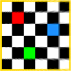
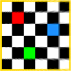
You can see the slight fuzziness caused by image compression, but the image is
basically restored.
What actually happens is that IM uses all the control point pairs given to
calculate the appropriate coefficients for a 'Perspective Projection' (see next).
If you include a Verbose setting, you can see
both the coefficients, and the DIY FX
Equivalent that is being used internally by IM to perform this distortion.
If only 3 or less control point pairs are provided, IM will automatically fall
back to the simpler 'Affine' distortion.
While more that 4 points (for 'Image Registration') will be Least Squares Fitted to find the best fitting
distortion for all the given control points.
FUTURE: Alternative. The four coordinates could also represent a triangle
and center point. You can fix the triangle and move the center point, or fix
that center and move the other three coordinates, to generate the perspective
view.
If you like to see more detail of how the distortion works, look at the Perspective Internals below. You can also
look at a Postscript implementation that was presented in a PDF paper Perspective
Rectification, by Gernot Hoffmann. Also have a look at Leptonica Affine and Perspective
Transforms.
Viewing Distant Horizons
You can produce some very unusual effects using Perspective Distortions if you adjust the coordinates to produce a
'vanishing point' within the boundaries of the image.
convert checks.png -mattecolor DodgerBlue \
-virtual-pixel background -background Green \
-distort Perspective '0,0 20,60 90,0 70,63 0,90 5,83 90,90 85,88' \
checks_horizon.png
| |
![[IM Output]](checks_horizon.png)
|
Well we used 'Green' for the virtual pixels that 'surround' the
original image image, which we enabled using Virtual Pixel Background Settings. But what is more interesting is the
appearance of the 'blue' color that was defined using the "-mattecolor" setting.
This 'blue' color represents an area where the pixels generated by the
distortion is invalid, and in such areas the "-distort" operator will
just output the "-mattecolor" setting.
For a Perspective Distortion, any pixel ending up
in the 'sky' of the resulting image will be classed as invalid. Also it
defines the 'sky' as being the side of the 'horizon' on which the source image
will not appear. The 'sky' will only appear in perspective distorted images
when the resulting image is highly foreshortened by the distortion.
If you don't want a 'sky' in your final image result then the best idea is to
set both "-background" and "-mattecolor" to use the same color.
The Perspective Distortion gets more interesting
when one of the special infinite tiling Virtual Pixel settings are used. For example here we used a 'tile' setting to generate an infinitely
tiled plane.
convert checks.png -virtual-pixel tile -mattecolor DodgerBlue \
-distort Perspective '0,0 20,60 90,0 70,63 0,90 5,83 90,90 85,88' \
horizon_tile.png
| |
|
A word of warning about this image. Asking for an infinitely tiled image is
very slow to generate. The larger the image the slower it gets. You
can monitor the progress of the "-distort" (or any other slow image processing task) using the
"-monitor" Operational Control Setting.
Basically for a single pixel that is close to the horizon, ImageMagick will
need to average a huge number of pixels from the original image to figure out
the appropriate color. This can take a very long time. ImageMagick does try
to limit the amount of time it uses to handle these near-horizon pixels, by
caching information, and using some in-built knowledge of various Virtual Pixel settings, but it can still
take a long time.
For more details of this method see Area
Resampling above.
Another infinitely tiled perspective image can be generated by using a Random Virtual Pixel Setting...
convert checks.png -virtual-pixel random -mattecolor DodgerBlue \
-distort Perspective '0,0 20,60 90,0 70,63 0,90 5,83 90,90 85,88' \
horizon_random.png
| |
![[IM Output]](horizon_random.png)
|
What is happening is that all virtual pixels surrounding the image are just
random picks of any pixel within the image itself. The result is a ground
consisting of random noise that gets smoother and more blurred as you look
toward the horizon of the image. It gives a natural feeling of depth, without
any specific repeating pattern.
Here I repeated the above but with a pure black and white source image.
However I am not interested in the actual distorted image, only the Virtual Pixel 'random' pattern
that was generated, so I changed what part of the 'distorted image space' I am
looking at, by using a special
'-set option:distort:viewport' setting. This setting
overrides the normal size and location of the area of distorted space being
viewed. In this case an area only containing virtual pixels, and not the
distorted image.
convert -size 90x90 pattern:gray50 -matte \
-virtual-pixel random -mattecolor none \
-set option:distort:viewport 120x120+100-15 \
-distort Perspective '0,0 20,60 90,0 70,63 0,90 5,83 90,90 85,88' \
+repage -size 120x50 gradient:dodgerblue-tomato \
-compose DstOver -composite sunset_horizon.png
| |
![[IM Output]](sunset_horizon.png)
|
To complete the image I removed the viewport offset (using "+repage" ), and Underlaid or DstOver a gradient of sunset
colors into the transparent 'sky' (set using "-mattecolor") .
A very interesting image that could be used as a backdrop for some other image
processing work. You can adjust the distortion parameters to adjust the
height and slope of the horizon.
Here is a more traditional test of a tiled perspective distortion.
convert pattern:checkerboard -scale 120x120 -normalize \
-virtual-pixel tile -distort Perspective \
'0,0 10,61 119,0 60,60 0,119 5,114 119,119 125,110' \
checkered_plain.gif
| |
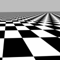
|
In my studies I found the above test to be misleading, as it gives no real
indication of the quality of the area resampling technique for near unity
scales of an image (foreground area, rather than distant areas). That is
a close look at the resampling problems such as described in Resampling Artefacts.
This last image also shows a 'cutoff' point close to the horizon where
ImageMagick decided that it was not worth attempting to determine the
appropriate color for a pixel (with consideration of the current virtual pixel
setting), but short-circuit the EWA algorithm and use the average color of the
whole image. It is only visible in this image because of the large scale
diagonal pattern of color that is present in the image.
The average color of an image is only calculated once per distortion
operation, and only when first needed. By using it ImageMagick saves a huge
amount of time calculating colors close to the horizon when typically the
result will be the images average color. This happens when either the ellipse
become so elongated as to exceed floating point limits, or the number of
sampling pixels (bounding parallelogram of elipse) becomes 4 times larger than
the input source image. This is currently not user setable.
3d Boxes, Perspective Layering
The 'plus' form of "+distort" which ensures the whole distorted image is
preserved in a correctly positioned layer (or 'virtual-canvas') is designed so
that if the same 'control points' used to distort images, those point will
line up in 'virtual-space'. This means that if the images are Layer Merged together, those images will also
line-up according to the control points.
For example here we generate two images, a 'front' and a 'spine' image, so
that two edge control points are lined with each other, to form the spine of a
box.
# Generate a Spine Image
convert -size 200x40 xc:skyblue \
-pointsize 20 -gravity north -annotate +5+0 'IM Examples' \
-pointsize 10 -gravity south -annotate +0+0 'ImageMagick' \
-stroke blue -strokewidth 2 -draw 'line 30,0 30,40' \
-rotate -90 box_spine.jpg
# generate the front cover
convert -size 150x200 xc:skyblue \
-fill black -pointsize 20 -gravity north -annotate +0+5 'IM Examples' \
-fill blue -pointsize 15 -gravity northeast -annotate +5+28 'Box Set' \
-fill black -pointsize 15 -gravity south -annotate +0+5 'ImageMagick' \
-stroke blue -strokewidth 2 -draw 'line 0,169 150,169' \
\( logo.gif -resize 100x100 \) \
-gravity center -compose multiply -composite box_front.jpg
# Distort both images and merge using common points.
convert \
\( box_spine.jpg -alpha set -virtual-pixel transparent \
+distort Perspective \
'0,0 -30,20 0,200 -30,179 40,200 0,200 40,0 0,0' \) \
\( box_front.jpg -alpha set -virtual-pixel transparent \
+distort Perspective \
'0,0 0,0 0,200 0,200 150,200 100,156 150,0 100,30' \) \
\
-background black -compose plus -layers merge +repage \
-bordercolor black -compose over -border 15x2 box_set.jpg
|
![[IM Output]](box_spine.jpg) 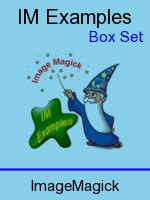
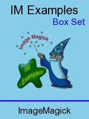
![[IM Output]](box_set.jpg)
Also note the use of Plus Alpha Composition to
join 'edge connected' pieces. This is required to prevent the generation of
a 'semi-transparent gap' between the two images. For more information see 3D Cube example above, as well as Aligning Two Masked Images.
Using positions like this means that almost all the 'spine' image is actually
distorted into a negative 'x' position. The resulting image thus has
a negative offset on the virtual canvas. IM has no problems doing this when
using the layering "+distort" version of the operator. The Layers Merge operator also is designed to handle
layering images with negative offsets, 'stitching' the two images together
cleanly.
I still need to use a final "+repage" to remove that negative offset from the final
image, after they have been 'merged' together. If I don't other programs like
web browsers may not understand such negative offsets, and cause undefined
effects.
The above is example has also been placed in the shell script "box_set_example" so that you
can download and play with it more conveniently.
You can take this further to also add mirror images of the 'box' being
reflected by surface on which it sits, though you may also like to recolor or
dim that image in some way to make it more realistic. See Reflections for such mirror techniques.
A further example in PHP, was developed in a discussion on Wrapping 'photos'
over a borderless canvas frame. See Canvas wrap transformation, for more details.
To finish off with here is a fantastic example by Jean-François Hren for www.animecoversfan.com which was
heavily discussed on the IM Discussion
Forums.
This image was created by taking an artistic image of an anime video box cover,
splitting up that cover into 3 segments ('cover', 'spine', and 'back'),
distorting each separately, into layered images, adding a fourth 'disk' image,
and merged together. The image was then finished by the addition of
highlights and shading effects (using HardLight image composition), and the addition of border and
semi-transparent shadow effects (using CopyOpacity).
What is more amazing is the whole process was done by a single
"convert" command, from the input images. It is an excellent
example of just what IM can do, and the process by which a complex command
script can be generated. I recommend reading the forum discussion as it contains a lot of
hints, tips, and general debugging techniques.
(More Contributed examples welcome)
Perspective Projection Distortion
Just as the 'Affine' distortion can be
handled directly giving the mathematical coefficients for a 'Affine Projection', so to 'Perspective' can also be handled by
8 coefficients of a 'Perspective Projection' distortion.
As before, these numbers represent the coefficents used for the Forward Mapping of points in the source image to
the destination image. That is they are the mathematical values used to map
a source image x,y to a destination image i,j.
The 8 floating point arguments are (in the order given)...
sx, ry, tx,
rx, sy, ty,
px, py
|
These coefficient values in turn form the expression..
Xd = |
sx*Xs +
ry*Ys + tx |
, |
Yd = |
rx*Xs +
sy*Ys + ty | |
|
|
px*Xs +
py*Ys + 1.0 |
px*Xs +
py*Ys + 1.0 |
Where "Xs,Ys" are source image coordinates
and "Xd,Yd" are destination image
coordinates. Internally ImageMagick Distort will reverse the above equations
so as to do the appropriate Reverse Pixel Mapping to
map "Xd,Yd" coordinates to lookup the color
at "Xs,Ys" in the source image.
The first 6 values of the 'Perspective Projection' is in fact the
same coefficients to that of the 'Affine
Projection', though they are slightly reordered to be more logical
(in 'matrix math' terms, the first 6 elements have been diagonally
transposed).
The extra two arguments px,py form a
scaling divisor to the whole distortion which causes the image to look smaller
in the specific direction according to the values given, and thus giving the
distorted image the perspective 'distance' effect. If these two values are set
to zero, the 'Perspective Projection' distortion becomes
equivalent to a 'Affine Projection'
For example...
convert rose: -alpha set -virtual-pixel transparent \
-distort Perspective-Projection \
'1.40, 0.25, 3.0 0.15, 1.30, 0.0 0.007, 0.009' \
perspective_projection_rose.png
| |
|
Remember the matrix you give is the forward projective matrix, that will map
source image coordinates to destination image coordinates. Internally
ImageMagick will reverse the matrix so it can map destination image coordinates
to source image coordinates. If you like to see what those values are use the
Verbose Distortion Option, to get IM output
its internal coefficients as a FX Operator
Expression (see next).
Perspective Internals
If you add "-verbose"
(see Verbose Distortion Summery above) just
before the Perspective distortion IM will output two operators that should be
near equivalent replacements to the "-distort" operator. One is a VERY SLOW "-fx" version (See FX DIY operator. The other will be the Forward
mapping Perspective_Projection matrix.
For example...
convert rose: -matte -virtual-pixel transparent -verbose \
-distort Perspective "0,0,3,0 0,46,10,46 70,0,70,7 70,46,60,40" \
+verbose perspective_rose.png
| |
![[IM Output]](perspective_rose.png)
| |
|
The first section Perspective Projection can be used to map source
coordinates into destination coordinates. The formula is as above.
i = ( 1.430099*x +0.246650*y +3 )/( 0.006757*x + 0.009448*y +1 )
j = ( 0.147296*x +1.434591*y +0 )/( 0.006757*x + 0.009448*y +1 )
|
An example of extracting and using these values is showing in the last set of
examples in Positioning Distorted Layer
Images.
On the other hand the second FX equivalent section uses a different set of
8 coefficients, which performs the Reverse Pixel
Mapping an image distortion actually needs to apply. Namely...
x = ( 0.711858*i -0.108326*j -2.135575 )/(-0.004119*i -0.005877*j +1 )
y = (-0.073090*i +0.699571*j +0.219269 )/(-0.004119*i -0.005877*j +1 )
|
Note in the output FX equivelent formula the divisor coefficients are
used first as they are common to both X and Y coordinate equations.
Remember all the coordinates that you give are in image coordinates, not pixel
coordinates, see Image Coordinates vs Pixel
Coordinates for details. As such any pixel position will need 0.5 added
to the input pixel coordinate, before applying the above, and then subtract
0.5 from the final coordinate, to convert it back into pixel (draw)
coordinates. You can see this being applied in the FX equivalent code
above.
The final test in the FX equivalent, just before the source image lookup,
handles the invalid 'sky' pixels, where the destination fails to map to the
source image correctly. However it will just substitute 'blue'
for such pixels instead of the "-mattecolor", and does not provide any horizon anti-aliasing
that the internal algorithm provides for the perspective distortion.
Example of perspective forward mapping...
These mappings let you convert a specific coordinate in one image to
a location in the other image (either direction). For example, a dark point
in the center of the source rose image is at pixel coordinates
'39,20'. Mapping that to image coordinates by adding ½ to
get '39.5,20.5'. Now we can use the x,y to i,j equations to map
that to destination image coordinates '44.2,24.1'. And finally to
'draw' pixel coordinates by subtracting ½ and we get the final position
of '43.7,23.6'.
And here I mark that coordinate using a circle on both the input and output
images..
convert rose: -fill none -stroke black \
-draw 'circle 39,20 39,24' rose_marked.png
convert perspective_rose.png -fill none -stroke black \
-draw 'circle 43.7,23.6 43.7,26.6' perspective_rose_marked.png
|
![[IM Output]](rose_marked.png)
As you can see the same point in the perspective distorted image has been
correctly located in both images (even down to a sub-pixel level)!
Bilinear Distortions
The 'Bilinear' distortion methods implements another, type of
4 point distortion. However this are not nearly as straight forward as
a 'Perspective' distortion we looked
at above. But as you will see it is a very useful alternative distortion.
Forward Bilinear Distortion
For example lets take a special test image of a mandrill that has had a
grid overlaid on it, and distort it with perspective and bilinear.
convert mandrill_grid.jpg -matte -virtual-pixel black \
-distort Perspective \
'0,0 26,0 128,0 114,23 128,128 128,100 0,128 0,123' \
mandrill_pers.jpg
convert mandrill_grid.jpg -matte -virtual-pixel black -interpolate Spline \
-distort BilinearForward \
'0,0 26,0 128,0 114,23 128,128 128,100 0,128 0,123' \
mandrill_blin.jpg
|
![[IM Output]](../img_photos/mandrill_grid.jpg)
Original
|
|
![[IM Output]](mandrill_pers.jpg)
Perspective
|
![[IM Output]](mandrill_blin.jpg)
Bilinear
|
First you should notice that both distortions correctly mapped the image from
one set of control points to the other set of points. Also all horizontal and
vertical lines in the source image also remain straight, in both distortions.
However there the simalities end. Perspective will reduce the spacing
between lines so that even the diagonal lines remain straight. This results in
the areas of the squares becomming smaller, and thus giving the top-right
corner a realistic 'in the distance' look.
Bilinear on the other hand does not make one side of the image look 'further
away', nor does it try to keep lines straight. What it tries to do is keep
all the spacings between the lines constant, but this results in the diagonal
line becomming curved.
That is it preserves the distance ratios along any given line. That is the
relative lengths each line segment remains the same along the whole length of
the line, even though the line itself may be bent, curved, or shortened as
a whole. That means the grid spacing in the above example remains constant
scale across the whole image, and the distorted square at the top-right is
still about the same size as the distorted square at the bottom-left. The
image remains 'flat looking', just distorted into a different shape.
Note that (forward) bilinear does ensure that any horizontal or vertical lines
in the original image will remain straight in the final image. That is it
will take an orthogonally aligned rectangle and transform it into the specified
quadrilateral, so that each of the sides of the original rectangle remains
straight with constant scaling over the whole line.
It is this aspect of the distort that makes a 'BilinearForward'
distortion useful in much more complex 'grid' distortions. That is because two
neighbouring 'quadrilaterals' even though they may be distorted very
differently will still correctly line up correctly edge-to-edge.
Here is another comparison between 'Perspective' and 'BilinearForward', using a very severe distortion of the built-in
rose image...
convert rose: -matte -virtual-pixel transparent \
-distort Perspective "0,0,3,0 0,46,10,46 70,0,70,7 70,46,60,40" \
perspective_rose.png
convert rose: -matte -virtual-pixel transparent -interpolate Spline \
-distort BilinearForward "0,0,3,0 0,46,10,46 70,0,70,7 70,46,60,40" \
bilinear_rose.png
|
![[IM Output]](../images/rose.png)
Original
|
|
Perspective
|
![[IM Output]](bilinear_rose.png)
Bilinear
|
To achieve its goals (preserving all straight lines) the Perspective
Distortion seems to 'suck' just about the whole image into the smaller area to
the right, while the Bilinear distortion kept the centered rose, centered in
its results. Again it preserved distance ratios, keeping the rose equally
spaced between the left and right edges. All in did was to simply vertically
compress the height of the image linearly along its length.
This aspect of a 'BilinearForward' distortion makes it also known
as a 'Trapezoidal' distortion. That is simply compress the image linearly in
one direction, when only one direction being scaled. that compression
direction can even be angled, rather than aligned along one axis.
|
Note that due to the complexity of the reverse pixel mapping needed to
perform a 'BilinearForward' distortion, the Area Resampling is currently turned off.
As such areas of extreme compression (more than a factor of 2) will likely
show some aliasing effects (see the edges of the lines in the examples
above. However using Super-Sampling, or
'-interpolate Spline' can be used to improve the quality of the
final image.
|
|
Before IM v6.5.7-0 the 'BilinearForward' distortion was still
in development and had problems with specific 'degenerate' cases, that could
cause a 'black' error image in specific situations.
|
Reversed Bilinear Distortion
Because only horizontal and vertical lines remain straight you can not use
a 'BilinearForward distortion to reverse the distortion. As the
grid lines in the transformed image are no longer horizontal or vertical, they
will no longer remain straight in the resulting image!
For example swapping coordinate pairs, and re-applying the 'forward'
distortion (such as we did using the 'Perspective' distortion above) will fail to recover the original
image.
convert mandrill_blin.jpg -matte -virtual-pixel black \
-distort BilinearForward \
'26,0 0,0 114,23 128,0 128,100 128,128 0,123 0,128' \
mandrill_blin_back.jpg
|
![[IM Output]](mandrill_blin_back.jpg)
Note that the actual coordinates specified did actually position themselves
correctly, but the image distortion has not been reversed.
In summery a 'BilinearForward'
distortion is NOT its own reverse.
To restore the image you need to use a slightly different but closely related
distortion. The mathematical reverse of the 'geometric transformation' has
been implemented as a 'BilinearReverse' distortion.
For example...
convert mandrill_blin.jpg -matte -virtual-pixel black \
-distort BilinearReverse \
'26,0 0,0 114,23 128,0 128,100 128,128 0,123 0,128' \
mandrill_blin_rev.jpg
|
![[IM Output]](mandrill_blin_rev.jpg)
|
As previously stated, due to the complexity of a 'BilinearForward' distortion, the Area Resampling is currently turned off, which in
the above causes sever aliasing effects.
|
The 'BilinearReverse'has the
same distance ratio preserving features of a 'BilinearFoward' but
will convert any quadrilateral into an orthogonally aligned rectangle, ensuring
the sides of the quadrilateral remain straight when mapped to a vertical and
horizontal alignment. As you can see in the above.
|
Before IM v6.5.1-2 the 'BilinearReverse' distortion was
implemented simply as 'Bilinear'.
|
Some implementations of a bilinear distortion (including older versions of IM
and the Leptonica
Library) only implemented the above simpler (reversed) version of Bilinear
distortion. However such a distortion is not very well suited to 'forward
mapping' a rectangular image.
For example here I try to use a 'BilinearReverse' for an distortion which should probably have used
a 'BilinearForward' distortion.
convert mandrill_grid.jpg -matte -virtual-pixel black \
-distort BilinearReverse \
'0,0 26,0 128,0 114,23 128,128 128,100 0,128 0,123' \
mandrill_blin_rev2.jpg
|
![[IM Output]](mandrill_blin_rev2.jpg)
As you can see as the destination quadratrial was not an orthogonal rectangle
the image was severely distorted producing lots of inward curving lines.
Tiled Bilinear Distortions
Now while a 'BilinearReverse'
produces 'curved' images from rectangular ones. The effect does produce
interesting tile patterns that seem to generate curved 3-dimentional looking
surfaces.
For example by applying the same transformation as was used for Viewing Distant Horizons above we get this interesting
result.
convert checks.png -virtual-pixel tile -mattecolor DodgerBlue \
-distort BilinearReverse \
'0,0 20,60 90,0 70,63 0,90 5,83 90,90 85,88' \
bilinear_rev_tile.png
| |
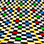
|
In actual fact 'BilinearReverse'
will never produce a 'horizon' (invalid pixels).
On the other hand, using 'BilinearForward' tends to produce 'sky' or 'invalid pixels'
(filled with the current "-mattecolor") quite regularly. In fact the tile pattern tends to
go rather crazy...
convert checks.png -virtual-pixel tile -mattecolor DodgerBlue \
-interpolate Spline -distort BilinearForward \
'0,0 20,60 90,0 70,63 0,90 5,83 90,90 85,88' \
bilinear_fwd_tile.png
| |
![[IM Output]](bilinear_fwd_tile.png)
|
|
As previously stated, due to the complexity of a 'BilinearForward' distortion, the Area Resampling is currently turned off, which in
the above causes sever aliasing effects.
|
As such I do not recommend using a tiled form of 'BilinearForward'. However I do recommend
you define an appropriate "-mattecolor" when using the forward distortion, to prevent the
appearance of unexpected gray patches of 'sky'.
Bilinear Internals
The actual formula for mapping a coordinate in the source image to
a destination image using a 'Forward Mapped
Bilinear Distortion is...
Xd = |
C0*Xs + C1*Ys +
C2*Xs*Ys + C3
|
, |
Yd = |
C4*Xs + C5*Ys +
C6*Xs*Ys + C7
|
However because IM implements distortions using the Reversed Pixel Mapping technique, the above formula needs to be reversed.
A complex process that requires the solving of a quadratic equation, square
roots, and a whole page fill of algebra.
If you ask IM to Verbosely output the FX
equivalent, you will see this complexity. For example using the checks image
we created previously...
convert checks.png -matte -virtual-pixel transparent -mattecolor none \
-interpolate Spline -verbose -distort BilinearForward \
'0,0,0,0 0,90,0,90 90,0,60,30 90,90,90,90' \
+verbose bilinear_checks.png
| |
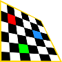
| |
|
The '(rt > 0 ) ? red :' check in the final line of the 'FX
equivalent' is to avoid an invalid negative square root. This is the check
that creates the 'sky' effect that was shown in the previous examples.
On the other hand, as the Reversed Bilineaer
Distortion is much simpler, as you can directly apply the simpler
polynomial equation, to reverse the previous distortion...
convert bilinear_checks.png -virtual-pixel transparent \
-verbose -distort BilinearReverse \
'0,0,0,0 0,90,0,90 60,30,90,0 90,90,90,90' \
+verbose bilinear_checks_rev.png
| |
![[IM Output]](bilinear_checks_rev.png)
| |
|
As you can see the resulting equations is very simple, as we are now applying
it to do a Reversed Pixel Mapping of destination
coordinates to source image coordinates.
|
The aliasing effects seen in the above is being cause by 'BilinearForward', and not by the
'BilinearReverse' distort.
This is because currently Area Resampling is
turned off for the 'forward' mapped version due to its complexity.
|
For further reading I direct you to Leptonica Affine and Perspective
Transforms.
Combined Bilinear Distortion
 Under Construction
Under Construction

The two Bilinear Distortion methods together will allow you to directly
distort ANY quadrilateral into any other quadrilateral, while keeping the
sides of the quadrilateral straight. Essentially you can first 'Reverse'
distort one quadrilateral into a rectangular image, then you can 'Forward'
distort that rectangle into the final quadrilateral.
This type of distortion also means that you can take any rectangular grid of
coordinates, and distort them to another rectangular grid of coordinates.
This is known a 'Grid' Distortion. this technique is the primary basis of
Image Morphing, where you define a rectangular grid of lines over two images
and use them to merge the images into an intermediate composite, or even
generate an animation that properly morphs from one image into another.
This however has not been implemented yet, though is a planned addition.
Polynomial Distortion
(distorts using a polynomial fit)
The 'Polynomial' distortion like most of the previous distortion
methods also maps pairs of control points, but uses a standard polynomial
equation. This means one extra argument is needed before the control points
are given.
Order
X1,Y1 I1,J1
X2,Y2 I2,J2
X3,Y3 I3,J3
X4,Y4 I4,J4 . . . .
The 'Order' argument is usually an integer from '1' onward,
though a special value of '1.5' can also be used. This defines
the 'order' or complexity of the 2-dimensional mathematical equation (using
both 'x' and 'y') , that will be applied.
For example an order '1' polynomial will fit an equation
of the form...
Xd = |
C2x*Xs
+ C1x*Ys
+ C0x |
, |
Yd = |
C2y*Xs
+ C1y*Ys
+ C0y | |
Which if you compare with the equation used for Affine Projection you will see that it is the equivalent. As 3 constants
is needed for each X and Y formula, you also need to provide at least 3 X,Y
coordinate pairs. Any more will cause the equation to be least-squares fitted
to the coordinates given.
The next 'order' or '1.5' is equivalent to a 'BilinearReverse' (remember the equation
is used to map destination coordinates to the source image).
Xd = |
C3x*Xs*Ys
+ C2x*Xs
+ C1x*Ys
+ C0x |
, |
Yd = |
C3x*Xs*Ys
+ C2y*Xs
+ C1y*Ys
+ C0y | |
Just like 'BilinearReverse' distortion, it needs
a minimum of 4 coordinates. For example...
Basically this is exactly the same as the order '1' equations but
with 1 extra term added to the polynomial equations. That is as each equation
now has 4 terms per axis, with 4 constants, so you now need at least
4 coordinate pairs, to allow IM to determine those constants.
convert mandrill_grid.jpg -matte -virtual-pixel black \
-distort Polynomial \
'1.5 0,0 26,0 128,0 114,23 128,128 128,100 0,128 0,123' \
mandrill_poly_1.5.jpg
|
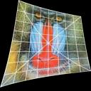
With an order '2' the polynomial equations is expanded further to
become a full quadratic fit, requiring a minimum of least 6 coordinate pairs.
Xd = |
C5x*Xs2
+ C4x*Xs*Ys
+ C3x*Ys2
+ C2x*Xs
+ C1x*Ys
+ C0x |
Yd = |
C5y*Xs2
+ C4y*Xs*Ys
+ C3y*Ys2
+ C2y*Xs
+ C1y*Ys
+ C0y | |
Basically this is exactly the same as the order '1' equations but
with 3 extra terms (order 2 + 1) pre-pended to the polynomial equations.
that is as each equation now has 6 terms with 6 constants you now need at
least 6 coordinates to allow IM to determine those constants.
Each successive order polynomial after this adds another
'order'+1 terms to each of the pair of equations. As such an
order '3' cubic-fit polynomial requires a minimum of 10
coordinate pairs to fully define, and an order '4' quintic-fit
polynomial needs 15 coordinate pairs.
You can use a Verbose Distortion Summery to
see the resulting equation that the polynomial distortion fitted to the
coordinates specified.
As an larger example I have an image of a grid. I also have a large set of
coordinates (stored in the file "grid16_control_points.txt") on how I what to warp that grid.
I then requested IM to generate a cubic polynomial to 'best-fit' the input
coordinates.
# warp image
convert grid16.png -virtual-pixel gray \
-distort polynomial "3 $(cat grid16_control_points.txt)" \
grid16_polynomial.png
# reverse image coordinate order
awk '{print $3, $4, $1, $2}' grid16_control_points.txt \
> grid16_cp_inverse.txt
# warp image back again
convert grid16_polynomial.png -virtual-pixel gray \
-distort polynomial "3 $(cat grid16_cp_inverse.txt)" \
grid16_restored.png
|
![[IM Output]](../images/grid16.png) 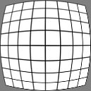
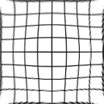
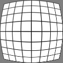
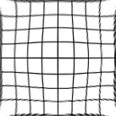
The small "awk" script takes the original set of X,Y control
point pairs and reverses the order, so that we can then use the new file to
try to 'undo' the distortion.
|
The coordinates in the control-point file "grid16_control_points.txt" are
in image coordinates, meaning each number refers to the center of the pixel
it refers to. Without the additional 0.5, the values would be in interger
'pixel coordinates'. See Image Coordinates
vs Pixel Coordinates above.
The values were determined purely by hand lookup using an image viewer, and
as such are not really very exact. This may be the source of some of the
reverse distortion artifacts, though the functional 'best-fit' of the
polynomial equations would have reduced the overall distortion effects.
|
This shows that while a polynomial distortion works, and works well, it is not
an exact or reversible distortion. Essentially the 81 coordinates are
'averaged' together so as to generate a mathematical 'best-fit' of the input
coordinates.
Because more control-points (81) have been provided rather than the minimum
(10) needed, none of the control points are guaranteed to exactly match the
coordinates requested. However for this specific example, where the
coordinaites are close to the expected distorted result, it should be
reasonably close.
The polynomial function will generally have the most errors along the edges
and especially in the corners of the image. This not only effects the pixel
locations but also the sampling area (EWA) at the edges.
This is a natural result of the approximation used. A higher order polynomial
could have been used, but in this case it does not make any great
improvements. For this specific case, the polynomial is actually trying to
fit itself to a non-polynomial trigonometric function. Due to the nature of
those functions, the second distort will be more inaccurate than the first.
This example is actually very closely related to a radial Barrel Distortion method which we will look at below.
Note however that the coordinates being mapped do not actually need to be in
a grid arrangement, but can be any set of coordinate mapping. Because of this
it is often used by geographers for aligning (and overlaying) aerial photos
with geo-physical maps, using known locations of towns, cross-roads, mountain
peaks, and other landmarks as the control points.
|
Due Polynomial Distortion being generally
non-reversible, it isn't posible for IM to calculate the 'best-fit' of the
destination image's viewport, for the given source image. As such the
"+distort" form of the operator
does not work, and falls back to a normal "-distort" operation. You can
however still use the Distort Viewport
option to define the viewport of the destination image.
|
Circular and Radial Distortion Methods
This are distortions that involve the use of radial vectors as the major
component of the distortion process.
Arc Distortion
(curving images into circular arcs)
The 'Arc' distortion (as of IM v6.3.5-5) is a simple variation of
a much more complex, polar distortion (see below).
By default it will curve the given image into a perfectly circular arc over
the angle given, and without other arguments it will try to preserve the
scaling of both the horizontal center-line of the image, and the image's
aspect ratio, as much as possible.
To do this it takes up to four arguments.
arc_angle rotate_angle top_radius bottom_radius
However only the "arc_angle" is required, the other
arguments are optional, and can be added as needed, in the sequence given.
For example 'Arc' an image over an angle of 60 degrees...
convert rose: -virtual-pixel White -distort Arc 60 arc_rose.jpg
| |
![[IM Output]](arc_rose.jpg)
|
|
Note that unlike the other image distortion operators, an 'Arc'
distort will always set the size of the resulting image so that the complete
source image is present. This includes any anti-aliasing edge pixels. As
such the resulting image will rarely match the size of the input image.
Only a the Viewport Distort Options, will
allow you to change the resulting image size for a specific distortion.
|
Adding the second argument "rotate_agle" allows you to
rotate the image around the circle. For example rotate it by 90 degrees.
convert rose: -virtual-pixel White -distort Arc '60 90' arc_rose_rot.jpg
| |
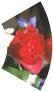
|
As no specific radius argument has be mentioned, the 'Arc'
distortion method takes great pains to try to ensure the original images scale
is preserved as much as possible. To do this the horizontal center line of
the image is set to the 'ideal radius' for the width and the given
"arc_angle" of the source image.
This means that if you arc the image over a larger
"arc_angle", the radius of the center-line used will also
shrink by the same factor. As such the radius of the center-line will be
smaller and tighter.
convert rose: -virtual-pixel White -distort Arc 120 arc_rose_3.jpg
| |
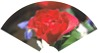
|
Note how the image will now fit into a smaller circle, but that the bottom
edge of the image is an even smaller circle still!
If you set an even larger angle over which to arc the image, the bottom edge
will hit the center of the distortion, and beyond, which results in
the lower part of the source image disappearing into oblivion.
convert rose: -virtual-pixel White -distort Arc 60 arc_rose_1.jpg
convert rose: -virtual-pixel White -distort Arc 90 arc_rose_2.jpg
convert rose: -virtual-pixel White -distort Arc 120 arc_rose_3.jpg
convert rose: -virtual-pixel White -distort Arc 180 arc_rose_4.jpg
convert rose: -virtual-pixel White -distort Arc 240 arc_rose_5.jpg
convert rose: -virtual-pixel White -distort Arc 300 arc_rose_6.jpg
convert rose: -virtual-pixel White -distort Arc 360 arc_rose_7.jpg
|
![[IM Output]](arc_rose_1.jpg) 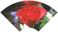
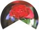
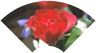
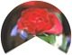
![[IM Output]](arc_rose_6.jpg)
![[IM Output]](arc_rose_7.jpg)
Arc into Full Circle Rings
Longer images will 'Arc' distort a lot better over very large
angles. For example you can wrap long images (like text messages) into rings.
And just so you can truly see what is happening here I set a different Virtual Pixel background color, so you can
see the boundary of the original image.
convert -font Candice -pointsize 20 label:' Around the World ' \
-virtual-pixel Background -background SkyBlue \
-distort Arc 60 arc_circle_1.jpg
convert -font Candice -pointsize 20 label:' Around the World ' \
-virtual-pixel Background -background SkyBlue \
-distort Arc 120 arc_circle_2.jpg
convert -font Candice -pointsize 20 label:' Around the World ' \
-virtual-pixel Background -background SkyBlue \
-distort Arc 180 arc_circle_3.jpg
convert -font Candice -pointsize 20 label:' Around the World ' \
-virtual-pixel Background -background SkyBlue \
-distort Arc 270 arc_circle_4.jpg
convert -font Candice -pointsize 20 label:' Around the World ' \
-virtual-pixel Background -background SkyBlue \
-distort Arc 360 arc_circle_5.jpg
|
![[IM Output]](arc_circle_1.jpg)
![[IM Output]](arc_circle_2.jpg)
![[IM Output]](arc_circle_3.jpg)
![[IM Output]](arc_circle_4.jpg) 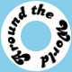
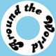
And hey presto we have 'arc'ed the label image into a full circle.
If you look closely at the join of the full circle image you may see a small
line of pixels, where the join is not quite complete. This is caused by the
effect of the surrounding 'SkyBlue' Virtual Pixel background, as we are
effectively joining two edges of an image.
When generating a full circle, you need to use a virtual pixel method that
will 'join' these two edges correctly. This is generally done by using one
of the tiling Virtual Pixel methods,
such as Tile.
convert -font Candice -pointsize 20 label:' Around the World ' \
-virtual-pixel Tile -background SkyBlue \
-distort Arc 360 arc_circle_tile.jpg
| |
![[IM Output]](arc_circle_tile.jpg)
|
Unfortunately, as you can see, this not only joins the image together
properly, but also generates duplicate lines of the image into and out-of
the primary ring. Not good.
As of IM v6.4.2-6 a new Virtual Pixel
method, HorizontalTile, solves this
problem. This method tiles the image sideways only, so it creates a good join
for our circled image, but fills the areas above and below the tiles with the
current background color, producing a perfect circle of text.
convert -font Candice -pointsize 20 label:' Around the World ' \
-virtual-pixel HorizontalTile -background SkyBlue \
-distort Arc 360 arc_circle.jpg
| |
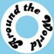
|
If before 'arc'ing an image you rotate the input image upside-down, you can
place the original 'top' of the image on the inside edge of the circle. Of
course you may like to 'rotate' the result back upright again afterward, but
that capability is already built into the 'Arc' distortion
method.
convert -font Candice -pointsize 20 label:' Around the World ' \
-virtual-pixel Background -background SkyBlue \
-rotate 180 -distort Arc '270 180' arc_flip.jpg
| |
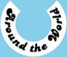
|
The third argument "top_radius" will override the 'ideal'
center line radius that is calculated, so that the top of the image will
become a circle of the radius given. This creates a ring that is 100 pixels
wide, though the accomidating image is 102 pixels wide to allow for
anti-aliasing effects.
convert -font Candice -pointsize 20 label:' Around the World ' \
-virtual-pixel HorizontalTile -background SkyBlue \
-distort Arc '360 0 50' arc_radius.jpg
| |
![[IM Output]](arc_radius.jpg)
|
The image still remains the same aspect ratio, so the above has essentially
the same as before, just scaled so as to fit the circle of the radius
requested. Remember the radius can be floating point, but the center of an arc
will always be aligned to a pixel 'corner', so the reulting image will still
be an even number of pixels wide.
If you provide the fourth "bottom_radius" argument, you
can get complete control of the width of the ring, or its 'radial height'.
convert -font Candice -pointsize 20 label:' Around the World ' \
-virtual-pixel HorizontalTile -background SkyBlue \
-distort Arc '360 0 45 30' arc_inner.jpg
| |
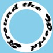
|
This will distort the radial scaling of the image, and effectivally separates
the radial scaling from the 'arc width' or angle of the resulting image. In
other words the original image aspect ratio will no longer be preserved.
You can even force it to completely fill the inside of the circle, wrapping
the bottom edge of the input image at the center, or 'pole' of the distrotion.
convert -font Candice -pointsize 20 label:' Around the World ' \
-virtual-pixel HorizontalTile -background SkyBlue \
-distort Arc '360 0 45 0' arc_fill.jpg
| |
![[IM Output]](arc_fill.jpg)
|
Arc Distortion Examples
You can generate interesting effects using a Arc
Distortion, for example arcing a longish checkerboard pattern into the ring
(using the Virtual Pixel setting
'HorizontalTile'
produces...
convert -size 210x30 pattern:checkerboard -matte \
-virtual-pixel HorizontalTile -background SkyBlue \
-distort Arc 360 arc_checks.png
| |
![[IM Output]](arc_checks.png)
|
By using the default Virtual Pixel
setting of 'Edge' you can produce a
more interesting effect.
convert -size 210x30 pattern:checkerboard -virtual-pixel Edge \
-distort Arc 360 arc_checks_edge.png
| |
|
Of course a 'Tile' setting generated
interesting 'radial' effects too, allowing you to generate a circular
checkerboard pattern.
convert -size 210x30 pattern:checkerboard -virtual-pixel Tile \
-distort Arc 360 arc_checks_tile.png
| |
|
The above can be refined further by controling the top and bottom radius of
the resulting image.
Here are some more 'Arc' distort examples,
but I let you play with them to figure out how they work. What can you come
up with?
convert -size 90x1 pattern:gray50 -scale 900x100 -normalize \
-virtual-pixel Tile -set option:distort:viewport 100x100-50-50 \
-distort Arc 360 +repage arc_radii.gif
| |
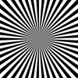
|
convert -size 400x100 pattern:hs_diagcross \
-virtual-pixel Tile -set option:distort:viewport 100x100-50-50 \
-distort Arc '360 0 80 0' +repage arc_cross.gif
| |
![[IM Output]](arc_cross.gif)
|
convert -size 360x80 xc: -draw "fill none stroke black line 0,5 360,80" \
-virtual-pixel White -distort Arc '360 0 50 0' arc_spiral.gif
| |
![[IM Output]](arc_spiral.gif)
|
|
|
convert tree.gif -set option:distort:viewport 120x60-60-60 \
-virtual-pixel Dither +distort Arc '180 0 25 0' \
+repage arc_rays.gif
| |
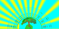
|
The 'rays' in this last example are a by-product of the pseudo-random
'Dither' Virtual Pixel setting, resulting in an odd
pixel pattern of the 'sun' color from the top-left corner from the original
image. The same dithering effects also produces the circular line of 'dashes'
surrounding the 'tree' image.
You can achieve a similar and more controlled version of this effect
by using a 'Edge' setting with image
that has been modified to add interesting edge pixels.
Arc Center Point Placement
By default 'Arc' will completely ignore any Virtual Canvas offset the image may have or
even not report the location of the 'center' around which the image was
arc'ed. However knowing the location of the 'center point' can be very useful.
If instead of using "-distort" you use the special plus form, "+distort", the image will
be given a Virtual Canvas, so that center is
located at the virtual canvas origin. In other words the '0,0'
point of the image is set to be the 'center' of the arc.
This is especially useful for positioning an arc'ed image with a smaller angle
than the full circle, where the arc 'center' is not the center of the image.
For an example...
convert logo: -resize x150 -gravity NorthEast -crop 100x100+10+0! \
\( -background none label:'IM Examples' \
-virtual-pixel Background +distort Arc '270 50 20' \
-repage +75+21\! \) -flatten arc_overlay.jpg
| |
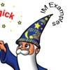
|
Here I create a text label 'Arc' distorted it
into an incomplete circle using the plus "+distort" form of the operator. The 'center' of the arc was
carefully preserved by IM using the images virtual canvas offset.
This means that by simply doing a relative adjustment of the offset using "-repage" with a
'!' flag, we can position the resulting circle of text anywhere
we want! Such as the point of the wizard hat, which is located at the pixel
coordinated 75,21, in the above example.
Unfortunatally as virtual offsets are used to position the image, the exact
positioning is limited to integer pixel sizes. You can not position a Arc Distortion to a sub-pixel defined location without doing
a second distortion. However you can do this for a Polar
Distortion (see next).
Polar Distortion
(full circle distorts)
The 'Polar' distort (Added IM v6.4.2-6) is a more low level
version of the 'Arc' distortion above. But it
will not automatically do 'bestfit', nor does it try to preserve the aspect
ratios of images.
The 6 optional floating point arguments are...
Radius_Max Radius_Min Center_X,Center_Y Start_Angle,End_Angle
|
All the arguments are optional at the spaced positions.
By default the 'CenterX,Y' will default to the very middle of the input
image area. Then a full circle polar image will be generated such that the
whole top edge becomes the center, while the bottom edge is wrapped completely
around the outside of the circle. The left and right edges meeting will meet
at above the center point at angles '-180' to '+180'
image.
As the 'Radius_Max' must be given, it should some positive value.
However if you give a value of '0' it will be set to the
distance between the center and the closest edge, so that if the other values
are not given (defaults), the whole input image is mapped into a circle in the
middle of the image.
For example, lets convert a map of the world into a polar view, using all the
defaults. Of course you should specify a Virtual Pixel setting of 'HorizontalTile' when producing a full circle polar mapping...
convert worldmap_sm.jpg -virtual-pixel HorizontalTile \
-background Black -distort Polar 0 polar_arctic.jpg
|
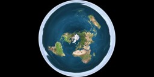
Of course this distorts the southern hemisphere severely, wrapping the
Antarctica completely around the circumference of the 'diskworld'.
By rotating the source image, and cropping it so to just show the polar cap,
we can generate a nice map of the Antarctic Continent. I also specified a
larger output radius, to make more visible, and asked IM to 'fit' the output
image to this size by using the 'plus' form of the Distort
Operator.
convert worldmap_md.jpg -rotate 180 -crop 100%x25%+0+0 +repage \
-virtual-pixel HorizontalTile -background Black \
+distort Polar 80 +repage polar_antarctica.jpg
| |
![[IM Output]](polar_antarctica.jpg)
|
Note that the above are not strictly correct views of the earth, as the
Cartesian map is a representation of a sphere, and not an image in polar
coordinates.
If you use a special 'Radius_Max' value of exactly '-1'
the radius of the distorted image is set to the distance from the center to
the furthest corner (diagonal). This is to provide an ideal 'reverse' for
a full image 'DePolar' distortion which
we look at next. (See (De)Polar Tricks below for
examples of use).
|
Remember, unlike an 'Arc' distortion,
'Polar' (also known as a 'Cartesian to
Polar' distortion) makes no attempt to preserve the 'ideal' aspect ratio of
the source image. Caution is advised.
|
The 'CenterX,Y' arguments are most useful is positioning the center of
the resulting image at a sub-pixel offset. That is whether the center is at
the boundary of a pixel (whole number) or the center of a pixel (with 0.5
offsets). Of course it also determines the location of the virtual canvas
'layer'.
By default however it is assigned a value the middle of the image
(for "-distort" which uses the input image as the viewport)
or 0,0 (for "+distort" layer image).
The next arguments 'Start_Angle,End_Angle are even less commonly used,
and limit angles the input image covers, defaulting to a value of -180 to 180
degress (0 is straight down). Like 'Arc'
distortion you could use this to rotate the resulting polar image. But it can
also be used to generate 'arcs'.
For example...
convert worldmap_sm.jpg -virtual-pixel Black -background Black \
+distort Polar '60,20 0,0 -60,60' +repage polar_arc.jpg
|
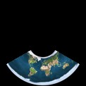
Note that currently IM does not reduce the size of the resulting layer
image, which is aligned so that the virtual images origin is at coordinates
0,0, as requested. Other than argument style, this is the biggest
difference between 'Arc' and 'Polar' distortion.
Also note that the left edge (angle -60) is to the left. This is
mathematically correct when you consider that the 'Y' axis is downward (same
as for all image rotates).
Of course like Arc you can use Virtual-Pixel tiling effects to generate
repeated patterns. For example, this is exactly the same as the last example,
just with a 'HorizontalTileEdge' setting...
convert worldmap_sm.jpg -virtual-pixel HorizontalTile -background Black \
+distort Polar '60,20 0,0 -60,60' +repage polar_arc_tiled.jpg
| |
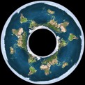
|
DePolar Distortion
(Polar to Cartesian)
This is essentially the inverse of a 'Polar' distortion, and has exactly the same set of optional
arguments.
The 6 optional floating point arguments are...
Radius_Max Radius_Min
Center_X,Center_Y
Start_Angle,End_Angle
Again if 'Radius_Max' is set to '0' the distance the
'CenterX,Y' to the nearest edge is used which means anything in the
largest whole circle, will be mapped to fit into an image the same size as the
input image.
For example, lets reverse the previous 'diskworld' back into a Cartesian Map.
convert polar_arctic.jpg -distort DePolar 0 world_restored.jpg
|
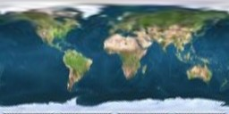
As the input image size has been preserved all the way though the two
distortions, the result of the above is basically exactly the same as the
original map. Of course as the image was compressed both at the top 'pole'
and in radius, the output is a lot fuzzier than you may expect.
|
Actually it is made worse in that the Area
Resampling algorithm (EWA) can not sample pixels in a circular arc. As
such Area Resampling is turned off for
"DePolar" distortions. It is
recommended that some form of Super-Sampling
technique be used instead, such as shown in the next section.
|
If you allow IM to use 'bestfit' (using the "+distort" form of the
operator), then it will resize the output image so as keep the
'Radius_Max' at unity scaling, and set the width to the circumference
distance of the radius midway between 'Radius_Max' and
'Radius_Min'. This essentially tries to best preserve the Aspect Ratio
of the polar image, though this may produce a longer thinner image than
expected.
For example.
convert polar_arctic.jpg +distort DePolar 0 world_restored_2.jpg
|
(De)Polar Cycle Tricks
(radial/angular blurs)
As we saw above using a 'Radius_Max' of '0' will ensure
that the whole image will be mapped into a circle when using a 'Polar' (Cartesian to Polar) distortion, and
the same setting will map that circle back into a rectangular image by using
'DePolar' (Polar to Cartesian).
However this will not work very well if you what to 'DePolar' a rectangular image, and then reverse the distortion
again using 'Polar'. For example lets take
a flower image, de-polar, then restore it using the special
'Radius_Max' value of '0' (radius = nearest edge).
convert flower_sm.jpg -virtual-pixel Black \
-distort DePolar 0 flower_depolar.jpg
convert flower_depolar.jpg \
-virtual-pixel HorizontalTile -background black \
-distort Polar 0 flower_circle.jpg
|
![[IM Output]](flower_sm.jpg)
![[IM Output]](flower_circle.jpg)
Now the image is not restored properly as it was clipped by the first
'DePolar' distortion. Even so this itself
an useful technique, and can be used to generate perfect circular masks for an
existing image sized in a way that is completely independent of the input
image given.
To do this 'DePolar'-'Polar' cycle technique correctly we need to use
a radius that is the distance from the center to the furthest corner. The
special 'Radius_Max' value of '-1', will ask IM to
calculate an use the furthest corner from the 'center point', as the radius.
convert flower_sm.jpg -virtual-pixel Black \
-distort DePolar -1 flower_depolar-1.jpg
convert flower_depolar-1.jpg \
-virtual-pixel HorizontalTile -background black \
-distort Polar -1 flower_restored.jpg
|
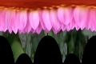
The restored image is slightly blurry, which is caused by the compression of
the radius needed to preserve the whole image during the 'DePolar' operation. That however can be fixed by
using an appropriate Super-Sampling technique
(see next set of examples).
But why would you want to convert an image into this form and back again?
Well by applying other distortions on the intermediate 'DePolar' version of
the image, you can generate some very fancy radial or angular effects very
easily.
For example by rolling the intermediate image, you will rotate the output
image, though you may get some clipping of the corners...
convert flower_sm.jpg -virtual-pixel Black -distort DePolar -1 \
-roll +15+0 \
-virtual-pixel HorizontalTile -background Black \
-distort Polar -1 flower_polar_rotate.jpg
| |
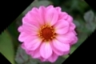
|
Note that the direction of the rotation is reversed from that of the Rotate Operator or the SRT
Distortion.
Depolar-Polar Cycle problems
In the image rotation above you may have notice some 'stair case' like
distortions along the edge of the rotated image. This is a well known problem
and is caused by compressing the large circular circumfrence of the image into
the smaller 'width' of the input image.
For example here I take the checker-board test image, and just run it though
a normal Depolar-Polar cycle without making any changes.
convert checks.png -virtual-pixel Transparent \
-distort DePolar -1 checks_depolar.png
convert checks_depolar.png -virtual-pixel HorizontalTile -background None \
-distort Polar -1 checks_cycled.png
|
![[IM Output]](checks_depolar.png)
![[IM Output]](checks_cycled.png)
You can clearly see the aliasing effects caused by image compression in the
points of the intermedite image. It is also exasperated by the fact that
normal Area Resampling is not used during that
initial 'Depolar' conversion of the input image.
The best way to solve this problem is to use Distort
Output Scaling to both enlarge the intermediate image, and then shrink the
final image. This will provide a Super-Sampled
result, that will remove the compression artifacts seen above.
For example, this is the better 'no-op' depolar-polar cycle, all in one
command...
convert checks.png -virtual-pixel Background -background None \
-set option:distort:scale 4 -distort DePolar -1 \
-noop \
-virtual-pixel HorizontalTile -background None \
-set option:distort:scale .25 -distort Polar -1 \
checks_cycled_ss.png
| |
![[IM Output]](checks_cycled_ss.png)
|
As you can see the horible aliasing effects has all but disappeared. However
be warned that a very tall thin image could make the problem reappear. The
best idea is to limit this to 'landscale' or wide images, with super-sampling
as shown above.
All you need to do now is replace the "-noop" operator with the appropriate command to generate the
radial and rotational effect you are looking for.
Example Depolar-Polar Effects
So lets again show better Polar Rotation of the image, this time using
super sampling. Note however that as the intermediate image is 4 times larger,
the amount of Image Roll also needs to be 4
times larger.
convert flower_sm.jpg -virtual-pixel Black \
-set option:distort:scale 4 -distort DePolar -1 \
-roll +60+0 \
-virtual-pixel HorizontalTile -background Black \
-set option:distort:scale .25 -distort Polar -1 \
flower_polar_rotate_ss.jpg
| |
![[IM Output]](flower_polar_rotate_ss.jpg)
|
As you can see the 'stair-case' effect along the edge has been removed, with a
much higher quality image result.
Or you can apply simple linear blurring of the intermediate image (such
achieved by squeezing and enlarging the image again).
convert flower_sm.jpg -virtual-pixel Black \
-set option:distort:scale 4 -distort DePolar -1 \
-scale 10%x100%\! -filter Gaussian -resize 1000%x100%\! +filter \
-virtual-pixel HorizontalTile -background Black \
-set option:distort:scale .25 -distort Polar -1 \
flower_angular_blur.jpg
| |
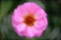
|
The result is very similar to a 'Rotational Blur' of the image. This
is similar to but not quite the same as the mis-named Radial Blur Operator. Actually the results
are at a higher quality than that specialized blurring method.
Note the use of a 'black' color in the various forms of Virtual Pixel Settings that was applied, will
result in a slight darkening of the edges, but it isn't too bad in the above
case.
One method to remove the 'black' edges effects, would be to use
'transparency' color instead, and then just turn-off the
alpha/matte channel completely when finished so as to leave just the actual
color that IM calculated.
Another is to use two 'edge' virtual pixel methods ('Edge' and 'HorizontalTileEdge'), which
extends the edges of the image into the undefined virtual canvas space.
convert flower_sm.jpg -virtual-pixel Edge \
-set option:distort:scale 4 -distort DePolar -1 \
-scale 10%x100%\! -filter Gaussian -resize 1000%x100%\! +filter \
-virtual-pixel HorizontalTileEdge -background Black \
-set option:distort:scale .25 -distort Polar -1 \
flower_angular_blur_edge.jpg
| |
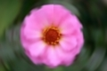
|
Which shows a much better result near the edges.
By blurring the polar version of the image vertically, this time using Motion Blur Operator, rather than resize
compression, you can generate a Radial Streaks that move outward from
the center of the image...
convert flower_sm.jpg -virtual-pixel Black \
-set option:distort:scale 4 -distort DePolar -1 \
-virtual-pixel Edge -motion-blur 0x28-90 \
-virtual-pixel HorizontalTile -background Black \
-set option:distort:scale .25 -distort Polar -1 \
flower_radial_blur.jpg
| |
![[IM Output]](flower_radial_blur.jpg)
|
To make the result only blur the highlights (the petals) of the image, you can
compose this with the original image using Lighten, so only the blurred lighter colors remain visible, with the dark
colors not blurring into the lighter areas, and destroying the yellow spots in
the middle of the flower.
convert flower_sm.jpg flower_radial_blur.jpg \
-compose Lighten -composite flower_radial_blur_lighten.jpg
| |
![[IM Output]](flower_radial_blur_lighten.jpg)
|
See also Stars and Comets for another
example of doing this, but directly generating the intermediate 'DePolar'
image, before applying a 'Polar'
distortion.
Special thanks goes to Fred
Weinhaus for the special uses of a DePolar-Polar cycle, and for insisting
that I ensure that these distortions were fully reversible for rectangular
images. He puts this technique to good effect in a number of his ImageMagick
Scripts, including "bump", "ripples", and "striations".
Barrel Distortion
(correcting lens distortions)
The Barrel Distortion (added to IM v6.4.2-4) is designed specifically for
correcting the spherical distortions caused by camera lenses in photos. That
is distortions such as barrel and pincushion effects, which are effectively
the reverse of each other.
For actual application of using this operator for lens distortion correction
see the section, Lens Correction.
The distort is implemented based on a set of 4 coefficient values, known as
A, B, C, and D, as defined
by Professor Helmut
Dersch, in a web size that has since vanished. You can see a Wayback Machine archive of
the site at Correcting Barrel Distortion.
The values basically form a distortion equation such that...
Rsrc =
r * ( A*r3 + B*r2 + C*r + D )
Where "r" is the destination radius and
"Rsrc" is the source pixel to get the pixel
color from. the radii are normalized so that radius = '1.0' for
the half minimum width or height of the input image. This may seem reversed
but that is because the Reverse Pixel Mapping
technique is used to ensure complete coverage of the resulting image.
All four coefficients (A, B, C, and
D) are fixed for any specific camera, lens, and zoom,
combination. All three of which is typically stored with the image in a EXIF Profile. This is important as it means that
once you have these values for your camera you can use them to remove the
spherical lens distortion that is present in all the photos taken by that
camera and lens combination.
The arguments needed for the 'Barrel' distort method.
Generally you supply 3 or 4 values only...
A B C [ D [ X , Y ] ]
The optional X,Y arguments provide an optional 'center' for the
radial distortion, otherwise it defaults to the exact center of the image
given (regardless of its virtual offset).
The coefficients are designed so that if all four A to D values,
add up to '1.0', the minimal width/height of the image will not
change. For this reason if D (which controls the overall scaling of the
image) is not supplied it will be set so all four values do add up to
'1.0'.
Using the parameters '0.0 0.0 0.0' (equivalent to
A=B=C=0.0 and D=1.0')
will produce no change to the input image, and is the 'no-op' argument for
this distortion.
Here is an example from the original web site, using the supplied coefficients
for the camera that was used to take the photo.
convert barrel_distorted.jpg -virtual-pixel black \
-distort Barrel "0.0 0.0 -0.075 1.1" \
barrel_distorted_fixed.jpg
|
![[IM Output]](../img_photos/barrel_distorted.jpg) 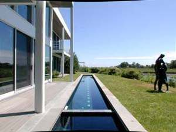
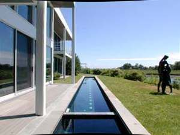
Note how the distortion in the image was corrected making the pillars of the
building straight. However as the 4 coefficients added up to a value that was
greater than 1.0 the image was shrunk by a small amount,
producing the small black areas at the middle top and bottom edges (according
to the given Virtual Pixel Setting).
Here is the effect of adding 0.2 to each of the input coefficients, again the
values add up greater than 1.0 so the resulting distorted image
will be smaller.
convert checks.png -virtual-pixel gray \
-distort Barrel "0.2 0.0 0.0 1.0" barrel_checks_A.png
convert checks.png -virtual-pixel gray \
-distort Barrel "0.0 0.2 0.0 1.0" barrel_checks_B.png
convert checks.png -virtual-pixel gray \
-distort Barrel "0.0 0.0 0.2 1.0" barrel_checks_C.png
convert checks.png -virtual-pixel gray \
-distort Barrel "0.0 0.0 0.0 1.2" barrel_checks_D.png
|
![[IM Output]](barrel_checks_A.png)
![[IM Output]](barrel_checks_B.png) 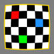
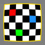
![[IM Output]](barrel_checks_D.png)
Subtracting 0.2 produces the opposite effect, though I offset the
effect using a larger 'D' value (to shrink the image) so you can
see the results better.
convert checks.png -virtual-pixel gray \
-distort Barrel "-0.2 0.0 0.0 1.3" barrel_checks-A.png
convert checks.png -virtual-pixel gray \
-distort Barrel "0.0 -0.2 0.0 1.3" barrel_checks-B.png
convert checks.png -virtual-pixel gray \
-distort Barrel "0.0 0.0 -0.2 1.3" barrel_checks-C.png
convert checks.png -virtual-pixel gray \
-distort Barrel "0.0 0.0 0.0 1.3" barrel_checks-D.png
|
![[IM Output]](barrel_checks-A.png)
![[IM Output]](barrel_checks-B.png)
![[IM Output]](barrel_checks-C.png) 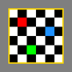
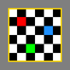
Note how the value of A produces a larger effect than B, and
B a larger effect than C, while D provides an overall
scaling of the result. This allows you to use each coefficient to adjust the
image so that you can correct for one distortion around the outer edge, and
another distortion toward the middle, be it pincushion for one, and barrel for
the other. Very versatile.
The above coefficients (A, B, C, and D) are
designed to work with a 'normalized' radius that is half the minimum width or
height of the image (like the '0' radius setting for Polar
Distort. That is they are image size independent. As such you can use
the same set of values for any image that a specific camera generates,
regardless of its quality size (camera setting), or if you resized the image
smaller.
It is possible to adjust the coefficient values to use other 'normalized'
radius values using the appropriate multipliers/divisors to each coefficient.
Such as using half the maximum width/height, or using the diagonal radius.
|
Helmut Dersch also notes that you should consider using a LAB colorspace for
distortion correction in photos, as it produces better color interpolation.
This may actually be true of all distortions (including Resize.
Testing show that LAB space is just as non-linear as sRGB, but does avoid
the posiblity of color distions when extreme values are clipped. See Human Color Perception, and the
practical examples in Resizing with
Colorspace Correction.
|
You can also declare a different set of coefficients for the x and y axis,
allowing you to generate some unusual distortions.
Ax Bx Cx Dx
Ay By Cy Dy
[ X , Y ]
The use of separate X and Y arguments was prototyped in Fred Weinhaus's pinbarrel script
though his arguments are in the reverse order with D first and
A last.
By using a positive C value, with appropriate D value for just
the 'y' set of coefficients you can distort images so that they bulge
vertically in the middle.
convert rose: -matte -virtual-pixel transparent \
-distort Barrel "0.0 0.0 0.0 1.0 0.0 0.0 0.5 0.5" \
barrel_bulge.png
| |
![[IM Output]](barrel_bulge.png)
|
Similarly using a negative C value you can 'pinch' an image in the
middle.
convert rose: -matte -virtual-pixel transparent \
-distort Barrel "0.0 0.0 0.0 1.0 0.0 0.0 -0.5 1.9" \
barrel_pinch.png
| |
![[IM Output]](barrel_pinch.png)
|
Or by adding the opposite effect for the X coefficients, make it look like
your squeezing the image between your fingers, making it bulge out the sides.
convert rose: -matte -virtual-pixel transparent \
-distort Barrel "0.0 0.0 0.5 0.5 0.0 0.0 -0.5 1.9" \
barrel_pinch_2.png
| |
![[IM Output]](barrel_pinch_2.png)
|
BarrelInverse Distortion
(alternative barrel distortion)
The 'BarrelInverse' distortion method is very similar to the
previous Barrel Distortion distortion method, and in
fact takes the same set of arguments. However the formula that is applied is
slightly different, with the main part of the equation dividing the radius.
that is the Equation has been inverted.
Rsrc =
r / ( A*r3 + B*r2 + C*r + D )
|
This equation does NOT produce the 'reverse' the 'Barrel'
distortion. You can NOT use it to 'undo' the previous distortion.
|
The result of this is that you would use the 'negative' form of the A,
B, C, with an equivalent adjustment in D to achieve a
similar but slightly different result. Some sources such the research paper
Method
for Correcting Lens Distortion (PDF) suggest that a better result can
be achieved with a lens correction distortion of this form.
For example here is the equivalent of the last 'Pinch' example using this
form of distortion.
convert rose: -matte -virtual-pixel transparent \
-distort BarrelInverse "0.0 0.0 -0.5 1.5 0.0 0.0 0.3 0.5" \
barrel_inv_pinch.png
| |
![[IM Output]](barrel_inv_pinch.png)
|
Projective Distortions
These are distortions that is used to project or map images that exist on one
surface, onto another surface. The projective lines may be parallel, or
radiate from some specific location.
While technically Affine and Perspective Distortions are also 'projective' in that they 'project'
images on one flat surface onto another flat surface (using parallel, and
radial projections respectivally), they are so common they are looking at in
greater detail in their own example areas above.
Here are the more unusual 'Projective Distortions' that have been implemented,
typically with the help of the IM Discussion
Forum.
Cylinder 2 Plane
The 'Cylinder2Plane' distort is a radial projective distortion
from a point in the center of a cylinder to a flat plane that is at a tangent
to that cylinder.
This arrangement is typical of a special pinhole camera known as a P.90 camera. where
a photo of 90 degree arc is captured on a film that forms a cylinder in the
camera.
Here is an example photo from such a camera...
The problem with this is that the resulting image is distorted, so that
straight lines become curved arcs, due to the physical arrangement of the
film. Essentually a curved surface wrapping itself around 'point' projection
source (a pinhole).
Note that normal pin hole camera does not have this problem as you are
projecting onto a flat surface from a point source.
The 'Cylinder2Plane' distort fixes this by projecting the image
from its cylindrical arrangement onto a flat plane. It takes the
parameters...
fov_angle center_x,y fov_output dest_center_x,y
Only the first parameter the angle of the cameras field of view is required.
For a P.90 camera it used a 90mm (radial) focal length and standard 57mm wide
film, which in turn produces produces a 'field of view' of 90
/ 57 * 180/pi or 90.467 degrees.
Here for example I project a P90 photo onto a plane to make the image look
more 'normal' and make straight lines straight again.
convert p90_orig.jpg -virtual-pixel Gray \
+distort Cylinder2Plane 90.467 p90_plane.png
|
![[IM Output]](p90_plane.png)
Note that the both the width and the height of the image has changed, as we
are using the 'plus' version of the distort, so as to show all the distorted
pixels in the original image. It is wider because of the projection, while the
height of that actual image along the vertical center line did not change.
The photo and algorithm was from an IM discussion Correcting for a curved film plane.
The discussion also flowed into another discussion on Algorithmic vignetting correction for
pinhole cameras.
The special 'fov_output' if given will scale the resulting output image
so the width of the output image (typically a viewport size) will exactly
match this angle. If no viewport is given, a best match is enabled, to best
approximate a 1:1 scaling of the image image, while still aligning the image
edges to whole integers.
The center-point parameter of the distortion (tangent and horizon point of the
input). The last 'center' parameter controls precise floating point
positioning of the results in the viewport image 'layer' (that is sub-pixel
translations).
This with the 'center_x,y' parameter allows you to extract parts from
a larger image. For example extracting a small 90-degree view from a larger
360 degree panorama image.
FUTURE: extracting smaller flat 'viewing' images from a 360 panorama, as
well as an animation that slowly pans around those 360 degrees.
Plane 2 Cylinder
The 'Plane2Cylinder' distort is the reverse of the above
projection, and takes the parameters...
fov_angle center_x,y
For example, this un-does the previous P.90 camera example.
convert p90_plane.png -virtual-pixel Black \
+distort Plane2Cylinder 90.467 p90_restored.png
|
![[IM Output]](p90_restored.png)
The results still contain the extra pixels that were added previously, and
adds even more. These should be trimmed from the above result.
Here I use this distortion to generate an animation of a 'film-strip' complete
with film sprocket edge holes.
convert -size 12x12 xc: -draw 'circle 6,6 6,2' -negate \
-duplicate 5 +append +duplicate \
rose: +swap -background black -append \
-duplicate 3 +append \
-virtual-pixel HorizontalTile -background SkyBlue \
-duplicate 19 -distort SRT '%[fx:72*t/n],0 1 0 0,0' \
-distort Plane2cylinder 115 \
-bordercolor Skyblue -border 0x3 -set delay 5 \
film_strip_anim.gif
|
![[IM Output]](film_strip_anim.gif)
Explanation:
- First a hole image is drawn, which is duplicated and appended to
make a sequence of 6 holes. Then duplicated again.
- A built-in rose image is then added and sandwiched between the two copies
of these sprocket holes and appended together (with black fill) to create
a single frame of the final film strip.
- This is duplicated to create a film strip of 4 frames, that will define
the length of the final image.
- A 20 frame animation is created using SRT 'translation' distortions
See Distort Animations.
- Then each of those 20 frames is then distorted onto a cylinder over an arc
of 115 degrees, using a virtual pixel setting to generate an infinite
horizontale tile of the film strip
- The angle in this case is for just for the width of the input image the
width of the final image is more than 180 degrees, as I did not use
a 'plus' version of the distort. So while the distorted width shrinks
width wise, the output image does not.
- A final border is added, and animation settings applied.
Multi-Point and Freeform Distorts
Shepard's Distortion
(taffy-like distort)
Shepard's method (added to IM v6.4.2-4) uses the movement of the given control
points to distort the image in terms of 'local' effects. You can think of
this as equivalent to a thick block of 'taffy' representing the source image,
having pins driven into it and then the pins moved around.
More technically it moves points in terms of a Inverse Squared Distance Interpolation.
If only one control point is used, naturally the whole image is moved
(translated), just as you would get for an one point 'Affine' distortion. Not very interesting.
So lets try moving two control points. For example lets torture the 'koala'
by pulling on his ears (at '30,11' and '48,29')...
convert koala.gif -virtual-pixel Black \
-distort Shepards '30,11 20,11 48,29 58,29' \
koala_ear_pull.png
|
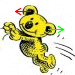
![[IM Output]](koala_ear_pull.png)
As you can see the parts of the image between the two control points were
stretched out because of the control point movement. However all the other
parts of the image was left pretty much intact, including the image close to
the control point itself, the bottom of the image, and so on.
The area that lies in the middle between the control points were pulled and
stretched out to ensure the control points are positioned where you requested.
What may not be so noticable is that the parts on the far-side of the control
points are also compressed, so that as you get further away, the control
points have less influence on the result.
That is this distortion generates a 'localized' distortion.
Lets expand our view (using a Distortion
Viewport) so we can see this better...
convert koala.gif -virtual-pixel Black \
-set option:distort:viewport 115x115-20-20 \
-distort Shepards '30,11 15,11 48,29 58,29' \
+repage koala_ear_pull_2.png
| |
![[IM Output]](koala_ear_pull_2.png)
|
As you can see the shape of the image was also distorted to accommodate the
stretched 'head' of the koala.
To avoid this effect it is more typical to also 'pin' the corners and
possibility some of the edges of the image, so that they don't move.
convert koala.gif -virtual-pixel Black \
-set option:distort:viewport 115x115-20-20 \
-distort Shepards '30,11 15,11 48,29 58,29
0,0 0,0 0,74 0,74 74,0 74,0 74,74 74,74' \
+repage koala_ear_pull_3.png
| |
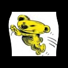
|
Even just moving one point, while pinning other points (just the corners in
this case) can be useful. For example lets just move the koala's nose (at
'28,24') into the middle of the image.
convert koala.gif -virtual-pixel Black \
-distort Shepards '28,24 37,37
0,0 0,0 0,74 0,74 74,0 74,0 74,74 74,74' \
+repage koala_move_nose.png
| |
![[IM Output]](koala_move_nose.png)
|
This specific example is special as it is the distortion used by Fred Weinhaus
for his single point 'animated morphing' script "shapemorph". However his original script used a slow DIY FX Operator, as Shepards Distortion had yet to be added to IM. This script was actually
where the original idea for Shepards Distortion came
from.
Moving areas of an image
You can even move a whole sections of the image by moving a set of points
around that section all together. For example lets move the koala's head
sideways by using points around the head (red line), but also pinning the
parts of the image we don't want to move (green line).
convert koala.gif -virtual-pixel Black -distort Shepards \
'19,8, 29,8 19,27 29,27 26,34 36,34
33,37 43,37 36,37 46,37 53,37 63,37 58,25 68,25
13,20 13,20 17,28 17,28 25,36 25,36
35,39 35,39 46,40 46,40 50,43 50,43 ' \
+repage koala_head_move.png
|
![[IM Output]](koala_head.png)
![[IM Output]](koala_head_move.png)
Note that while the head was moved, the edge of the head does get badly
distorted. The reason is that the distort does not move areas, but points. If
those edge marking points are too far apart, then the image will sort of drip,
leak, or bend between those points, just like taffy, or jello. (ASIDE: the
actual term is stretching a 'rubber sheet' or 'balloon').
Also if two control points are close together, but which move in different
directions or amounts, the image could locally swirl and bend around them. The
control points still end up in the right locations, but everthing else around
them gets severly warped to acheive that goal. And that is what happening
along the edge of the head.
So how close should edge marking points be? Basically at least half the
distance to any other points which are moving differently. So either add more
edge points, or put some extra distance between the fixed points, and the
moving points. By doing this, you will better define the space in which the
image can be stretch and compressed.
Also note that the whole image in general also moved to the left, along with
the head. Only the control points which were either fixed or moved to
specific destinations are guaranteed to be placed correctly. Any parts of the
image further away from any control points will also move based on a rough
average of all the control point movements.
It is thus better to have a lot more 'fixed' points, spread throughout the
image, or even some negative moved points some distance outside the image, so
as to offset the general average movement. You can also duplicate or double
up control points (list them twice) to give specific points more influence or
'power' over the distortion in that area.
Here is another version of the 'move head sideways', however this time I gave
some extra separation between the moving (red) and fixed (green) points. I
also added a lot more fixed points to reduce the average general movement of
the distorted image.
convert koala.gif -virtual-pixel Black -distort Shepards \
'15,15, 25,15 19,27 29,27 26,34 36,34
33,37 43,37 36,37 46,37 53,37 63,37
10,2 10,2 2,10 2,10 4,55 4,55 14,47 14,47
25,47 25,47 45,51 45,51 55,45 55,45
5,70 5,70 15,60 15,60 55,60 55,60 70,70 70,70' \
+repage koala_head_move_2.png
|
![[IM Output]](koala_head_2.png)
![[IM Output]](koala_head_move_2.png)
The final thing to do in the above is to simply set a better "-virtual-pixel" setting to
set what color the undefined black areas in the above should be.
Shepards and Image Rotations
One aspect of this distortion is that it does not like any form of rotation!
For example here is a repeat of the Perspective,
and BilinearForward, along side the Shepards Distortion.
convert mandrill_grid.jpg -matte -virtual-pixel black \
-distort Perspective \
'0,0 26,0 128,0 114,23 128,128 128,100 0,128 0,123' \
mandrill_pers.jpg
convert mandrill_grid.jpg -matte -virtual-pixel black -interpolate Spline \
-distort BilinearForward \
'0,0 26,0 128,0 114,23 128,128 128,100 0,128 0,123' \
mandrill_blin.jpg
convert mandrill_grid.jpg -matte -virtual-pixel black -interpolate Spline \
-distort Shepards \
'0,0 26,0 128,0 114,23 128,128 128,100 0,128 0,123' \
mandrill_shep.jpg
|
Original
|
|
Perspective
|
Bilinear
|
![[IM Output]](mandrill_shep.jpg)
Shepards
|
Note how Shepards Distortion produced
a very curvy image when compared to the other two distortion methods. That is
because it tries to preserve the image exactly in the area close-in to the
given control points. And that includes the rotation of the image.
As a result of this 'preservation' the grid is curved so that it remaines
'orthoginal' at the actual control point. It is a bit like those 'pins' at the
control points are not actually round pins, but 'crosses', forcing the 'jelly'
or 'rubber sheet' holding the image to also preserve the rotation of the
image.
This is also the source of many of the 'swirling' effects this distortion can
produce. For example, if we take two points in the image and push them past
each other. The image will swirl, not rotate.
For example lets try to push the koala's ears toward each other rather than
apart.
convert koala.gif -virtual-pixel Black \
-distort Shepards '30,11 40,11 48,29 38,29' \
koala_ear_push.png
|
Shepard's Power Factor
Normally the distance weights of a shepard's IWD (Inverse Weighted Distance)
follows an inverse square law (1/r2), however
as of IM v6.8.0-10 you can now use the expert define 'shepards:power' to control the 'power-level' of the
global weights.
If not defined it has a value of 2.0, but by defining it smaller you can
general more localized distortions around the moved control points from the
overall average displacement of the distorted image. Using a larger value
will generate a larger area of effect around the control points.
For example, here is a repeat of the 'koala ear pulling' example, with
different power levels applied to distortion weights.
convert koala.gif -virtual-pixel Black -define shepards:power=0.5 \
-distort Shepards '30,11 20,11 48,29 58,29' \
koala_ear_pull_pow0.5.png
convert koala.gif -virtual-pixel Black -define shepards:power=1.0 \
-distort Shepards '30,11 20,11 48,29 58,29' \
koala_ear_pull_pow1.png
convert koala.gif -virtual-pixel Black \
-distort Shepards '30,11 20,11 48,29 58,29' \
koala_ear_pull.png
convert koala.gif -virtual-pixel Black -define shepards:power=3.0 \
-distort Shepards '30,11 20,11 48,29 58,29' \
koala_ear_pull_pow3.png
convert koala.gif -virtual-pixel Black -define shepards:power=8.0 \
-distort Shepards '30,11 20,11 48,29 58,29' \
koala_ear_pull_pow8.png
|
Original
& action
|
|
power 0.5
|
![[IM Output]](koala_ear_pull_pow1.png)
power 1.0
|
power 2.0
(default)
|
power 3.0
|
![[IM Output]](koala_ear_pull_pow8.png)
power 8.0
|
All the above image results use exactly the same set of control point
movements. The only difference is the area of effect around those control
points. A small power will 'localise the movements to only the area close
into the control point, while larger powers will drag more of the image around
the control point with it. At very larger powers, this pull will tend to
'rip' the image into separate areas along the lines midway between the control
points.
You could even use much larger powers, which will simply translate regions
around the source control point, into areas around the destination control
point. These areas will form a pattern of 'voronoi regions' and can contain
a duplicate copies of the source image.
For example here I map the area around the koala's nose (at coordinates 28,24),
into 7 different areas in a hexagonal pattern, producing a 'insect eye' like
effect in a very efficent manner.
convert koala.gif -virtual-pixel Black -define shepards:power=25 \
-distort Shepards '28,24 35,35 \
28,24 20,10 28,24 50,10 \
28,24 20,60 28,24 50,60 \
28,24 10,35 28,24 60,35' koala_hexagonal.png
| |
|
Remember Shepards Distortion is actually equivelent
to a displacement map (mapping destination pixels to the source image)
generated using the same technique as the Shepards, Sparse Color Operator, which is also effected by this same
power factor define.
Shepard's Distortion, in sumary
The Shepards Distortion is a very versatile and free
form method, limiting its distortions to areas marked by the movements, or
non-movements of the given points. Its distortions are localized and
restricted according to the distances between neighboring control-points,
though all points still do have an averaged global effect.
Just remember that this distortion is point driven, not line or area driven,
so parts between the points can bulge, or swirl unexpectedly when control
points, that move differently, are positioned too close together.
It will swirl and stretch and compress the image between the control points,
but it tries hard not to rotate or scale the image near the control points.
And finally it may produce an overall average translation of the image far
away from any control point.
However if blocks of control points can be moved, preserving their general
relative positions, it does provide a way to implement a general and very
simple point driven 'Image Morphing' technique.
Fred Weinhaus script 'shapemorph2'
uses Shepards Distortion to provide a good general
purpose 'Animated Image Morphing' program.
|
Due to the complexity of calculations needed in using Shepards Distortion, IM does not provide any form of 'best-fit'
destination viewport using the plus "+distort" form of the operator. You can however still use the
Distort Viewport option to define a larger
output image.
|
|
For the same reasons the Area Resampling is
turned off. As such areas of extreme compression (more than a factor of 2)
will likely show some aliasing effects. For example, see the edges of the
hexagon pattern in the last example. However Super-Sampling can be used to improve the final image quality of
results, and reduce such aliasing effects.
|
Created: 14 January 2009 (distorts/warping sub-division)
Updated: 21 March 2012
Author: Anthony Thyssen, <Anthony.Thyssen@gmail.com>
Examples Generated with:
![[version image]](version.gif)
URL: https://legacy.imagemagick.org/Usage/distorts/
| ![[Diagram]](../img_diagrams/mapping.gif)
![[Diagram]](../img_diagrams/video_box_example.png)
![[diagram]](cylinder2plane.png)
![[photo]](../img_photos/p90_orig.jpg)
![[IM Output]](../images/koala.gif)
![[IM Text]](perspective_verbose.txt.gif)
![[IM Text]](bilinear_verbose.txt.gif)
![[IM Text]](bilinear_rev_verbose.txt.gif)
{kind=link}
{kind=link}
{kind=link}
{kind=link}
{kind=link}
{kind=link}
{kind=link}
{kind=link}
{kind=link}
{kind=link}
{kind=link}
{kind=link}
{kind=link}
{kind=link}
{kind=link}
{kind=link}
{kind=link}
{kind=link}
{kind=link}
{kind=link}
{kind=link}
{kind=link}
{kind=link}
{kind=link}
{kind=link}
{kind=link}
{kind=link}
{kind=link}
{kind=link}
{kind=link}
{kind=link}
{kind=link}
{kind=link}
{kind=link}
{kind=link}
{kind=link}
{kind=link}
{kind=link}
{kind=link}
{kind=link}
{kind=link}
{kind=link}
{kind=link}
{kind=link}
{kind=link}
{kind=link}
{kind=link}
{kind=link}
{kind=link}
{kind=link}
{kind=link}
{kind=link}
{kind=link}
{kind=link}
{kind=link}
{kind=link}
{kind=link}
{kind=link}
{kind=link}
{kind=link}
{kind=link}
{kind=link}
{kind=link}
{kind=link}
{kind=link}
{kind=link}
{kind=link}
{kind=link}